Introduction
Welcome
Welcome to the RNA-seq Primary Data Analysis Workshop. This workshop covers the fundamentals of RNA-seq data analysis, from raw sequencing data to normalized expression counts.
Use the navigation menu on the left to explore the workshop materials organized by day.
Welcome and Setup
Welcome to the RNA-seq Primary Data Analysis workshop
Before you attend the workshop there are a couple of things we would like you to do to get setup so you are able to participate in all sections of the workshop.
For those of you that indicated you did not have an account on the Dartmouth Discovery cluster you should have received an email explaining how to set that up, please make sure this is done and you are able to log into your account BEFORE the workshop begins. YOU WILL NEED A DISCOVERY ACCOUNT!
Install VPN Client
You will also need to install Dartmouth College's VPN client to access Dartmouth compute resources. Once you have your netID you can navigate here and use the green button on the left to install the VPN client.
How to do this workshop
We will be using a dataset downloaded from the Sequence Read Archive (SRA), a public repository of genomic data. This dataset comes from this paper, and was collected from human airway smooth muscle cells to test gene pathways effected by exposure to Glucocorticoid drugs, which have been historically used for their anti-inflammatory effects to treat asthma.
All the teaching materials are located within the GitHub repository. We suggest you bookmark this page so you can easily get back to this repository each day.
Lessons are provided in Markdown format (files with extension (.md)) and also contain 'code chunks' that you will use to perform the analysis of this dataset. The majority of analysis will be performed using a terminal application or emulator, with an open ssh connection to the Discovery cluster. You may copy and paste the code chunks into your terminal window to perform analyses, or type them out by hand.
If you wish to edit, modify or save the code in its own file (as you would in a real analysis), this can be achieved using a Text Editor application. Numerous free text editors exist, such as Sublime Text, BBEdit, and Atom. Experimenting with your code in a text editor is an excellent way to learn, as well as document your work on a project.
The terminal application you use will depend on the operating system you are using. If you do not already have a terminal emulator on your machine, please download one. Below are some recommendations for different operating systems.
| Operating system | Terminal emulators |
|---|---|
| Mac | Terminal (comes pre-installed) iTerm2 |
| Windows | MobaXterm PuTTY iTerm2 |
| Linux | Konsole, Terminal, etc. (should be pre-installed but depends on the desktop environment you are running) |
Install the Integrative Genomics Viewer (IGV)
We will be using the Integrative Genomics Viewer (IGV), a genome browser produced by researchers at the Broad Institute, to explore and visualize RNA-seq data.

You will need to download and install the IGV desktop application for your operating system before the workshop begins. The latest versions of IGV can be found at their downloads page. After installing IGV, try opening the application on your computer to confirm the installation was successful.
Installing an SFTP client
This is optional, but for those of you that are new to the command line, an SFTP client might be an easier way to move files between the HPC environment and your local machine. SFTP stands for Secure File Transfer Protocol and will enable you to drag and drop files as you might in a finder window between your local machine and a remote location, rather than using the command line.
Several free SFTP clients exist, such as FileZilla WinSCP, and Cyberduck, among others.
Setting up a Conda Environment
Conda is an open source package and environment manager that runs on Windows, MacOS and Linux. Conda allows you to install and update software packages as well as organize them efficiently into environments that you can switch between to manage software collections and versions.
We will be using Conda to make sure everyone has the required software to perform the analyses included in the workshop. To start using Conda on Discovery, open your terminal application and start an ssh connection using your username & password:
# Establish the secure shell connection
#### REPLACE 'netID' WITH THE ID ASSOCIATED WITH YOUR DISCOVERY ACCOUNT
ssh netID@discovery7.dartmouth.edu
# Enter your password at the prompt (when you type no characters will show up to preserve privacy)
netID@discovery7.dartmouth.edu password:
# You're in!
(base) [netID@discovery7 ~]$
Then run the following command:
source /optnfs/common/miniconda3/etc/profile.d/conda.sh
We recommend that you add the above line of code to your .bashrc file in your home directory, otherwise you will need to run this command each time you start a new session on discovery. To do this use the following code:
# navigate to your home directory
cd ~
# open the .bashrc file that is there
nano .bashrc
This will open the existing .bashrc file use the down arrow to move the cursor to the bottom of the file and paste source /optnfs/common/miniconda3/etc/profile.d/conda.sh. Then use the ctrl + x keys to exit the nano text editor, type Y to save the changes you made, and hit return to save the file to the same name (.bashrc).
Now run the following command to create a .conda/ directory in your home drive to store all of your personal conda environments. You only have to run this command once to make this directory, so it does not need to be added to your .bashrc file.
cd ~
mkdir -p .conda/pkgs/cache .conda/envs
Now create the conda environment that we will be using for the workshop. This takes about 15 minutes to complete. As you will see, many packages are being installed or updated, all managed for you by conda.
conda env create -f /dartfs-hpc/scratch/rnaseq1/environment.yml
When you are ready activate the conda environment, use the following command:
conda activate rnaseq1
You will see that the activate command has worked when it reads rnaseq1 rather than base to the left of the prompt.
When you are finished using a conda environment, it is good practice to deactivate your session with the following command.
conda deactivate
That's it! This conda environment contains all the software you will need during the workshop. If you run into issues with the setup, please reach out to us at DataAnalyticsCore@groups.dartmouth.edu and someone will be in touch to assist you.
NOTE: Dartmouth's Research Computing team also provides instructions for getting started with Conda on discovery, which you can find here.
Write a test file to the scratch space
We've created a folder on the scratch space for this workshop where everyone can write 'Hello' once they've completed these welcome and setup instructions. To write your own file, use the following code, replacing 'xyz' and 'your_name' with your own. The quotation marks and spaces are important! This will create a record of how many of us have successfully logged in to Discovery and finished the welcome and setup tasks:
echo "Hello from xyz" > /dartfs-hpc/scratch/rnaseq1/welcome/your_name.txt
So, for example, Tim would write:
echo "Hello from Tim" > /dartfs-hpc/scratch/rnaseq1/welcome/tim_sullivan.txt
Cheat Sheets
Cheat Sheets
This page provides links to handy cheat sheets for the tools we will be using throughout the workshop. We recommend having these open while you work if you are new to programming with any of these tools.
Note: Although we will not be using R in this workshop, cheat sheets for R are provided since R is an important tool used for downstream analysis of RNA-seq data, and therefore will likely be of value to you if you are performing RNA-seq analysis.
UNIX
Linux Command Line Cheat Sheet
Short-refcard
R programming
Base R
Data visualization
Regular expressions
Strings
RStudio
Useful Links
Useful links
This page provides links to useful tools for RNA_seq analysis. The cheat sheets directory in this repository also provides many useful links for more basic bioinformatics & programming skills.
Read processing/alignment
- cutadapt, for trimming reads
- STAR aligner, for aligning reads to a reference
- htseq-count, for quantifying read counts at genomic features
Quality control
- Picard tools, including CollectRnaSeqMetrics
- FastQC, for basic FASTQ quality control
- MultiQC, for aggregating quality control reports
Other
Day 1
Shell Basics
Unix/Linux Shell basics
The Unix/Linux 'Shell' describes a program that takes commands from an input (eg. your keyboard) and passes them to an operating system that will execute them. In contrast to a Graphical User Interface (GUI) the Shell is simultaneously a command line interface (CLI) and a programming language that allows you to perform tasks on your system.
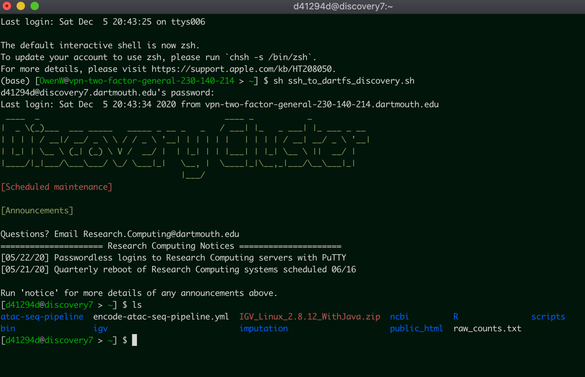
Interacting with a system through the Shell has many advantages over a GUI. The Shell allows you to quickly and easily navigate through directories on your computer, make, copy and search files in a systematic way, and construct pipelines that will execute complex tasks on big datasets.
Importantly, the Shell allows us to do each of these in the context of Bioinformatics, and Bioinformatics software.
Why learn to use a Shell?
Learning to use a Shell can be challenging, however it is a key skill in bioinformatics, as it is the primary way in which we interface with a lot of bioinformatics software and file types.
Some bioinformatics software provides GUIs that enable users execute tasks with programs that you would otherwise execute using the Shell. While such software can be powerful in the right context, they can also make it very easy to perform tasks in bioinformatics incorrectly, and should therefore should treated with caution.
The Bash shell
The absolute basics
There are different types of Unix shells, however the most popular is Bash (the Bourne Again Shell), which is also the most common on Linux systems. Since the majority of participants will be using the Bash shell, and this is the default shell used on Dartmouth's high performance computing system (which we will be using), this lesson will be introduce the Shell through using the Bash shell, however most, if not all, content should be transferable to other Unix shells.
Use the Cheat Sheet in the GitHub repo to help you learn commands and available options.
Accessing the (bash) shell:
- On a Mac or Linux system, the Terminal application provides access to the shell. There are also applications that you can download that provide customizations not present in the Terminal application, such as iTerm2.
- On a Windows system, you can use an application such as MobaXterm or PuTTY.
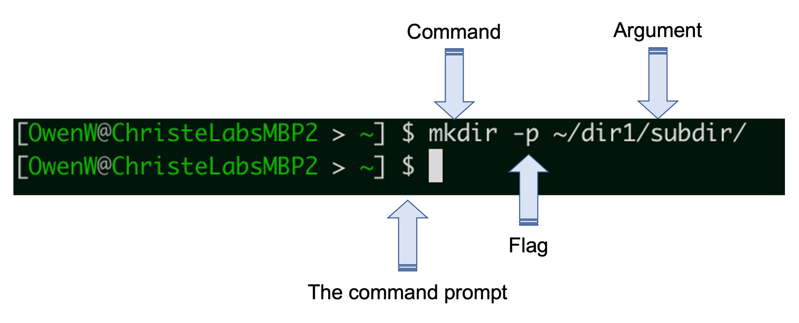
When you open your terminal application you will be presented with the command prompt $ when you are able to input commands. If the terminal is busy and cannot currently accept new commands, you will not be presented with the prompt.
When the prompt is shown, you can enter commands by typing them in after the prompt. Commands are typically composed of three components:
- the name of the command itself
- any flags or options you wish to run the command with (not always required)
- a file or directory to act on (sometimes implicit)
In the above example, we are asking the Shell to pass the mkdir command to the operating system (for making directories) with the -p option (which lets us make parent and sub directories at the same time) and the argument detailing what directory we want the command to make.
Manual pages for specific commands can be accessed using the man command.
man mkdir
The shell provides us with commands that allow us to list files in our current working directory, as well as change the current working directory to another location. For example:
# 'ls' command lists files in our current working directory
ls
# run ls with the '-a' option to include hidden files
ls -a
# The pwd command shows you your current working directory
pwd
# cd allows you to change your current working directory ('.' means current directory)
cd .
# '..' tells the shell to move your current directory up one directory
cd ..
# check you directory again
pwd
# now go back down the tree. Replace the directory name with your own.
cd OwenW/
pwd
To go back down the directory structure, we specified a directory that was in our current working directory (cd). This is called a relative path, since it is relative to our current directory and will only work if our current directory is relative to the directory we are trying to reach.
Relative paths are contrasted to absolute paths which always starts with a '/' and will start at the root (highest level) of the directory tree, and work from wherever you are in the directory substructure. For example:
ls /Users/OwenW/
By default, your terminal application will start your current directory as your home directory (more on that later). No matter where you are, you can always get back to your home directory using the tilde ~ with the cd command.
cd ~
Another useful command is echo which will evaluate and print characters provided to it.
echo "words words words"
We can use the redirect command (>) to redirect the output of commands like echo into a file. As an example, lets save the important note we made above to a text file.
echo "words words words" > mynotes.txt
Log on to discovery cluster
Many of the higher level commands for working with NGS data will require a lot of memory and computing power, more than most laptops can handle efficiently.
The discovery cluster is a resource hosted by Dartmouth's Research Computing team. This cluster enables you to execute high level commands without using the memory and computing power on your local machine (more on this soon). Let's log onto the discovery cluster now. We will use a secure shell command ssh to log onto the discovery cluster.
# Establish the secure shell connection
ssh netID@discovery7.dartmouth.edu
# Enter your password at the prompt (when you type no characters will show up to preserve privacy)
netID@discovery7.dartmouth.edu's password:
# You're in!
(base) [netID@discovery7 ~]$
The commands that you just executed locally in your terminal window work the same way when you are logged into discovery. It is always useful to orient yourself when you're working on an HPC so that you know where the output of all of the commands you run will end up. Let's run our first command to get your location.
# Check your location on the cluster
pwd
You should see something like /dartfs-hpc/rc/home/h/netID displayed in response to your command. Initially when you log on you will always be directed to your home directory (the address or path listed above). Your home directory by default will have 50GB of storage space to begin with, if you are running something that requires more storage space it is possible to extend that limit temporarily with the /dartfs-hpc/scratch/ drive. This is where we have stored all of the files you will be working with today. Directories and files hosted on the /dartfs-hpc/scratch/ drive will only be kept for 45 days, you will receive a notification from Research Computing before the data is deleted.
Start a new directory
Let's start by making a folder, or directory, to store all of the work you do today. We will call it rnaseq_workshp. Notice I chose a title with no spaces. The 'space' is a special character in UNIX, and special characters need to be escaped with the \ and so rnaseq_workshp would look like rnaseq\ workshp with escape characters.
File names with spaces become unwieldy to type out so most programmers will replace spaces with _, ., or - in their filenames to keep everything neat.
# Navigate to scratch so you can make your own directory there
cd /dartfs-hpc/scratch/
# Make the directory. Replace 'omw' with your own username.
mkdir -p omw/rnaseq_workshp/
# Change to the newly-created directory.
# replace omw with your initials
cd omw/rnaseq_workshp/
# Set an alias so we can get here quickly
# replace omw with your initials
alias biow='cd /dartfs-hpc/scratch/omw/rnaseq_workshp'
# NOTE: you can add this line to your .bashrc so it get run every time you log in, we will cover this below
# Check your location on the cluster
pwd
# List the contents of your directory
ls
As expected, the new directory that you created is empty there are no files. Lets copy a file from the /dartfs-hpc/scratch/ directory we created for this workshop to the directory you just created. This file (all_counts.txt) provides raw read counts for an RNA-seq experiment, with genes in rows and samples in columns.
Below we will use all_counts.txt for a number of exercises to familiarize you with standard UNIX commands.
# copy the file from the scratch drive to the rnaseq_workshp directory you just created
# remember the ./ is shorthand for the directory that you are currently in it might be prudent to run the 'pwd' command before running the 'cp' command so you know where your files will be copied to
cp /dartfs-hpc/scratch/rnaseq1/counts/all_counts.txt ./
Viewing the contents of files
The shell provides us with commands to view the contents of files in define ways. The cat command for example (which stands for for concatenate) will print the entire contents of a file to the terminal. This can be useful for smaller files, but as you will see with larger files can quickly fill the terminal with more lines of data than it can display.
cat all_counts.txt
When working with larger files, which we are usually doing in bioinformatics, you may not wish to print the whole file as it would overrun your terminal. Other commands exist that allow you to explore file contents with more control.
- more shows you as much of the file as can be shown in the size of the terminal screen you have open, and you can continue to "scroll" through the rest of the file by using the space bar
- less is a similar command to more, and has advantages such as not persisting in the terminal, and being searchable
- head will print the first 10 lines by default, but this number can be controlled with the -n option
- tail will print the final 10 lines of a file, and can also be controlled with the -n option
We will use a large text file to show the utility of these commands, as well as other commands in the subsequent parts of this lesson.
# Show the first 10 lines of the all_counts.txt file
head -n 10 all_counts.txt
# Show the last 20 lines of the all_counts.txt file
tail -n 20 all_counts.txt
# Use the word count (wc) command with the lines option (-l) to show how many lines (rows) are in the dataset
wc -l all_counts.txt
Renaming and removing files
Sometimes you will need to reorganize your directories or rename a file, which can be achieved with the mv command. Let's start by copying the all_counts.txt file from the rnaseq_workshp directory to your home directory.
# Copy the all_counts.txt file to your home directory
cp all_counts.txt ~/all_counts.txt
Now let's rename the copy of the all_counts.txt file that we just created.
# Rename the copied all_counts.txt file
mv ~/all_counts.txt ~/all_counts.copy.txt
You can also use the mv command to move a file to a new location. Let's move the all_counts.copy.txt from your home directory into your rnaseq_workshp directory.
# Move the all_counts.copy.txt into your rnaseq_workshp directory
# use pwd to check that you are in your own directory first
mv ~/all_counts.copy.txt ./
#check the contents of your rnaseq_workshp directory
ls
Copying the all_counts.copy.txt file was just an exercise to show you how the tools work, in practice you will want to keep your directories as neat as possible as you accumulate a lot of files. Let's remove the all_counts.copy.txt file with the rm command.
# For the sake of being careful, let's first list the details file to be removed
ls -l all_counts.copy.txt
# Remove the all_counts.copy.txt file
rm all_counts.copy.txt
You will notice that before the file was deleted you were asked if you were sure you wanted this file deleted. You want to be careful not to remove files that you did not create if you are working in shared directories. If you want to bypass this checkpoint, you can use the -f flag with rm -f to force the removal of a file, but be careful with this, as there is no Trash equivalent in the shell.
Manipulating file contents
Some commands enable you to manipulate and subset files based on specific parameters. One useful example is the cut command, which allows you to 'cut' a file based on the options you select, such as the -f option, which corresponds to fields (columns). We could use cut to obtain read counts for only the first 5 samples in all_counts.txt.
# Look at only the counts from the first five columns
cut -f 1,2,3,4,5 all_counts.txt
To prevent all rows being printed to our console, we could combine the cut command with the head command using a 'pipe', specified by a '|'. Pipes send the output an initial command to a subsequent command, all in the same line, to allow the output of the first command to be used as the input to the second.
# List only the first 20 lines of only samples SRR1039508 (col 2) and SRR1039523 (col 17)
cut -f 1,2,17 all_counts.txt | head -n 20
Similarly to how we used the pipe operator (|) above, we could use the redirect operator(>) to send the output of the cut command to create a new counts file, that only contains the columns 1 (gene IDs), and samples in columns 2 and 17.
# Print the counts from SRR1039508 and SRR1039523 to a new file
cut -f 1,2,17 all_counts.txt > all_counts_sub.txt
# look at head of this new file
head all_counts_sub.txt
Pattern matching with grep
Often we will want to pull a specific piece of information from a large file, let's say that we were interested in the read counts for a specific gene, ALDH3B1 (Ensembl ID: ENSG00000006534). We can use the grep command to search for this ID, or any other character string we are interested in, in our counts matrix.
# Get the count data for ENSG00000006534 (ALDH3B1) from all_counts.txt
grep "ENSG00000006534" all_counts.txt
grep is a pattern recognition tool that searches in files for a character string we can define. We can define the entire character string, as we did above, or combine regular characters with special characters (or 'wildcards') to search for specific types of matches. Some commonly used special characters are included in the table below.
| Operator | Effect |
|---|---|
| * | wildcard stands for any number of anything |
| ^ | start of the line |
| $ | end of the line |
| [0-9] or \d | any number (0123456789) |
| [a-z] | any lowercase letter |
| [A-Z] | any uppercase letter |
| \t | a tab |
These regular expressions can be used with any of the tools that you have learned thus far, so if we wanted to list all of the files in our directory that end in .txt we could use the following command.
# List all files that end in .txt
ls *.txt
We can even enhance the power of these regular expressions by specifying how many times we expect to see the regular expression with quantifiers.
| Quantifier | Operation |
|---|---|
| X* | 0 or more repetitions of X |
| X+ | 1 or more repetitions of X |
| X? | 0 or 1 instances of X |
Now let's use some of these regular expressions in a grep command to see their utility. Let's use regular expressions to see how many genes have zero reads counted for the first four samples. The flag -P indicates that we will be using perl-style regular expressions in the pattern we are searching for, you can use grep --h to learn more about available flags for the grep command.
# Count the number of genes with no reads in the first four samples
grep -P "^ENSG[0-9]*\t0\t0\t0\t0\t" all_counts.txt| wc -l
# Count the number of genes with no reads expressed in any of the samples
grep -P "^ENSG[0-9]*\t0\t0\t0\t0\t0\t0\t0\t0\t0\t0\t0\t0\t0\t0\t0\t0$" all_counts.txt| wc -l
Customizing your environment
You will notice the prompt in your terminal when you are logged onto discovery starts with the term (base) what this is indicating is that the environments loaded in your .bash_profile are the tools that are available for you to use. For this workshop (and for most NGS data processing) you will need to extend the software packages that are available to you.
We will do this now by loading a new environment with the tool conda. We have pre-built this conda environment for you such that all of the tools you will need have been loaded into this environment, you should have created this environment with the commands included in the welcome and setup email. Tomorrow we will talk more about how to create your own custom conda environment.
# Load conda environment
conda activate rnaseq1
# Check your PATH compared to before activating, note the additional binaries folder
echo $PATH| tr ":" "\n"
This should change the word at the beginning of your prompt from (base) to the name of the conda environment that you just loaded (rnaseq1).
As we move through the subsequent lessons, we will introduce more complex bash commands in order to manipulate common bioinformatics file types. If you are ever confused about what a command does, remember you can always use
manto check out the manual page (or Google it). It you are confused about how commands are used in conjunction with each other, it can also be helpful to break them down and run parts individually, in order to understand what the constituent parts do.
Breakout room activities
- Check out the Bash/Unix cheat sheet links in the GitHub directory, and try out a few other commands on the
all_counts.txtfile. Use themancommand to learn more about these commands and how they should be used.
Data Management and Setup
Part 02 - Data management & setup
Learning objectives:
- Familiarize yourself with the data set, directories, and set up your own working directory
- Understand the importance of good data management for RNA-seq analysis
Lets login to discovery7 and start and interactive session before we get started.
# open a secure connection.
ssh d41294d@discovery7.dartmouth.edu
# log onto the node we reserved
srun -p preempt1 --account=DAC --cpus-per-task=1 --pty /bin/bash
Dataset for the workshop
We will be using the RNA-seq dataset described in Himes et al, 2014, PloS One. This study investigates the mechanism by which glucocorticoids, a major treatment used in asthma care, prevent inflammation of airway smooth muscle cells (ASM).
The authors sequenced 4 primary human ASM cell lines that were treated with a control vehicle (untreated), dexamethasone (Dex), albuterol (Alb), or both dexamethasone and albuterol (co-treated) for 18 hours before sample collection (although only Dex samples are considered in the paper). They then use differential expression analysis to identify >300 differentially expressed genes (DEGs).
Although we won't be performing a differential expression analysis of these data in the workshop, it is still useful top understand the overall study design, depicted below:
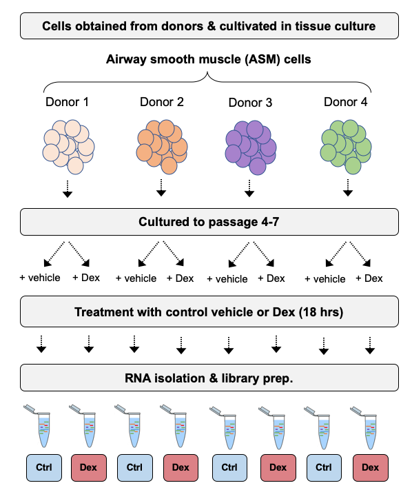
Raw data
Raw sequence data was obtained from the Sequence Read Archive
SRA toolkit (SRA) under project accession SRP033351. The raw FASTQ files are locted in /dartfs-hpc/scratch/rnaseq1/data. Each sample is named according to their SRR identifier from the SRA. SRR (SRA run accession) identifiers are used to denote objects containing actual sequencing data from a sequencing run.
If you would like to learn more about how to obtain publicly available data from the SRA, you should consult the NCBI download guide.
Normalized count data are also available from the Gene Expression Omnibus (GEO) for this dataset under accession GSE52778.
Although we won't use it for this project, if pre-processed data is available (e.g. raw or normalized counts) for a public dataset, it can save you time performing the primary data analysis (although you have to trust they did most of it right).
# lets have a look at the project directory containing the raw FASTQs
ls -lah /dartfs-hpc/scratch/rnaseq1/data/raw-fastq/
Since these are paired-end reads (we will talk more about this) each sample has a file for read 1 (SRRXXX_1) and a file for read 2 (SRRXXX_2). All of the files are gzipped in order to reduce the disk space they require, which is important as you can see that they are all generally at least 1GB (you need a lot of space to process RNA-seq, or other-NGS data).
Metadata
In addition to the raw sequence data in FASTQ format, datasets should always have an associated metadata file. Metadata refers the variables that describe individual sample characteristics.
Metadata, are required so that we know how to process the data appropriately, how to make key quality assessments, or set up the downstream analysis. A snippet of the metadata file for this project is shown below:
| Sample | Organism.Name | … | Instrument | Library.Source | tx.group |
|---|---|---|---|---|---|
| SRR1039508 | Homo sapiens | … | Illumina HiSeq 2000 | TRANSCRIPTOMIC | untreated |
| SRR1039509 | Homo sapiens | … | Illumina HiSeq 2000 | TRANSCRIPTOMIC | Dex |
| … | … | … | … | … | … |
| SRR1039521 | Homo sapiens | … | Illumina HiSeq 2000 | TRANSCRIPTOMIC | Dex |
| SRR1039522 | Homo sapiens | … | Illumina HiSeq 2000 | TRANSCRIPTOMIC | Alb |
| SRR1039523 | Homo sapiens | … | Illumina HiSeq 2000 | TRANSCRIPTOMIC | Alb_Dex |
You can find the complete file in the GitHub repo: misc/sample_metadata.csv
Some key metadata for these data (from the paper and SRA entry):
- Primary ASM cells were isolated from lung transplant donors with no chronic illness
- Passages 4 to 7 ASM cells maintained in Ham's F12 medium supplemented with 10% FBS
- For treatment with Dex, cells were treated with 1uM Dex or control vehicle for 18 hours (4 replicates in each group).
- RNA was harvested and prepared into cDNA libraries using the Illumina TruSeq RNA Sample Prep Kit v2
- Libraries were sequenced using 75-bp paired-end reads on an Illumina Hiseq-2000
Analysis overview
We will pre-process the raw sequence data, assess its quality, and reduce it to a matrix of raw read counts that can be used for downstream analyses, such as differential expression.
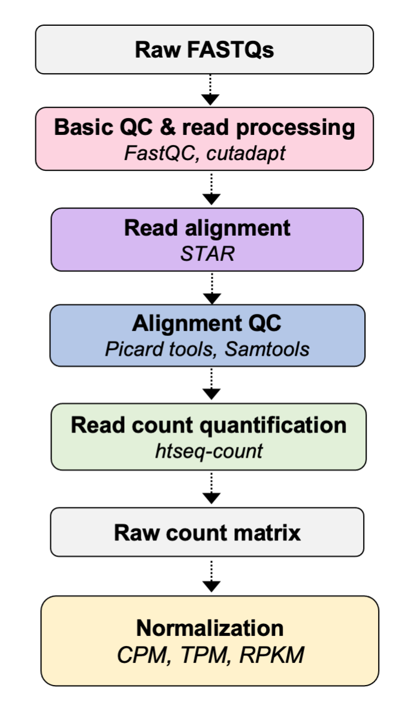
As we move through the analysis, we will be generating intermediate files for each of these steps. You will use the directory you created in /scratch/ to run your analyses and store you results. Navigate to that directory from wherever you are now.
# navigate to scratch
cd /dartfs-hpc/scratch/
# go into it
# remember to use your own initials - this is Owen's directory
cd omw/rnaseq_workshp2
# set an alias so we can get here quickly
alias rnaw='cd /dartfs-hpc/scratch/omw/rnaseq_workshp'
We need to set up some sub-directories where we will conduct each step. The desired directory structure for the workshop looks like this:
omw
├── raw_data
├── results
└── scripts
Lets make the subdirectories:
mkdir raw_data results scripts
We will use Symbolic links (sym links) to link the raw data in /dartfs-hpc/scratch/rnaseq1/data/raw-fastq to the directory we created for ourselves in scratch. Sym links provide a way of linking to distant files from within a directory that they do not actually exist inside. Since most genomics data is very large, it is impractical to move it around and copy it, so we use Sym links to point to files as if they were in our current directory.
Look in /dartfs-hpc/scratch/rnaseq1/data/raw-fastq
ls -lah /dartfs-hpc/scratch/rnaseq1/data/raw-fastq
You can see that the raw data for all samples is there, although, as we mentioned, it is very large, and each step in processing individual files can take a long time, so we will only use a subset of these data during the pre-processing of the data.
Specifically, we will be using 8 FASTQs from 4 samples (2 controls, 2 Dex) that only contain reads aligning to chromosome 20. These files are located in /dartfs-hpc/scratch/rnaseq1/data/raw-fastq/subset and are much smaller so that we will be able to complete time consuming steps like read alignment to the reference genome, in a practical time period.
Set up sym links to the raw FASTQs:
# have a look at the files
ls -lah /dartfs-hpc/scratch/rnaseq1/data/raw-fastq/subset/
# set up the sym link in your raw_data directory
cd raw_data/
ln -s /dartfs-hpc/scratch/rnaseq1/data/raw-fastq/subset/*fastq.gz ./
# have a lok at the links in your directory
ls -lah
For each step of the analysis, you can see we have included all of the files generated at each step for each sample in /dartfs-hpc/scratch/rnaseq1/data/. We've also made the entire processed dataset available if you want to practice with it, or try to replicate it yourself. We will leave this on /dartfs-hpc/scratch for 1 month before removing it.
You should have also created a conda environment called rnaseq_w by following the guidance in the workshop setup. conda is an excellent way to manage software versions, especially on high performance computing systems. It is critical you know AND track which version of software you use for an analysis. Not only do you need to report this when you publish your work, but is also important for anyone trying to reproduce your work.
Activate the conda environment:
conda activate rnaseq1
If you don't know what rnaseq1 is, please visit here.
We are now ready to start working with the data and processing the raw FASTQ files.
Downloading the workshop materials (optional)
Although not required since the workshop materials will remain available on the GitHub repository, you may download the workshop materials to your local computer. In your terminal window, navigate to where you want to download the files on your local machine. Then execute the following command:
git clone https://github.com/Dartmouth-Data-Analytics-Core/RNA-seq-Primary-Data-Analysis-workshop-June-2022/
FASTQ Files and Basic QC
Working with FASTQ files & basic quality control
Learning objectives:
- Understand the FASTQ file format and the formatting sequence information it stores
- Learn how to perform basic operations on FASTQ files in the command-line
If you get lost, or do not have enough time to finish the commands before we move to the next session you can copy the files needed for the next step with the following command from the scratch directory you have created for yourself.
cp /dartfs-hpc/scratch/rnaseq1/data/trimmed-fastq/* results/trim/
FASTQ file format
FASTQ files are arguably the workhorse format of bioinformatics. FASTQs are used to store sequence reads generated in next-generation sequencing (NGS) experiments. Similarly to FASTA files, FASTQ files contain a herder line, followed by the sequence read, however individual quality of base calls from the sequencer are included for each record in a FASTQ file.
Here is what a the first record of an example FASTQ file looks like
@SRR1039508.1 HWI-ST177:290:C0TECACXX:1:1101:1225:2130 length=63
CATTGCTGATACCAANNNNNNNNGCATTCCTCAAGGTCTTCCTCCTTCCCTTACGGAATTACA
+
HJJJJJJJJJJJJJJ########00?GHIJJJJJJJIJJJJJJJJJJJJJJJJJHHHFFFFFD
Four rows exist for each record in a FASTQ file:
- Row 1: Header line that stores information about the read (always starts with an @), such as the instrument ID, flowcell ID, lane on flowcell, file number, cluster coordinates, sample barcode, etc.
- Row 2: The sequence of bases called
- Row 3: Usually just a + and sometimes followed by the read information in line 1
- Row 4: Individual base qualities (must be same length as line 2)
Quality scores, also known as Phred scores, in row 4 represent the probability that the associated base call is incorrect, which are defined by the below formula for current Illumina machines:
Q = -10 x log10(P), where Q = base quality, P = probability of incorrect base call
or
P = 10^-Q/10
Intuitively, this means that a base with a Phred score of 10 has a 1 in 10 chance of being an incorrectly called base, or 90%, as in the table below:
| Phred Score | Probability of incorrect call | Accuracy |
|---|---|---|
| 10 | 1 in 10 | 90% |
| 20 | 1 in 100 | 99% |
| 30 | 1 in 1000 | 99.9% |
| 40 | 1 in 10,000 | 99.99% |
| 50 | 1 in 100,000 | 99.999% |
| 60 | 1 in 1,000,000 | 99.9999% |
However, we can clearly see that these are not probabilities. Instead, quality scores are encoded by a character that is associated with an ASCII (American Standard Code for Information Interchange) characters. ASCII codes provide a convenient way of representing a number with a character.
In FASTQ files, Q-score is linked to a specific ASCII character by adding 33 to the Phred-score, and matching the resulting number with its ASCII character according to the standard code.
| Symbol | ASCII Code | Q-Score |
|---|---|---|
| ! | 33 | 0 |
| " | 34 | 1 |
| # | 35 | 2 |
| $ | 36 | 3 |
| … | … | … |
| ? | 63 | 30 |
| @ | 64 | 31 |
| A | 65 | 32 |
| … | … | … |
You can see the full table here. This encoding means that quality scores only take up 1 byte per value in the FASTQ file (saves disk space).
For example, the first base call in our sequence example above, the C has a quality score encoded by an H, which corresponds to a Q-score of 34, meaning this is a good quality base call.
In contrast, you can a stretch of #s indicating a Q-score of 2. Looking at the FASTQ record (line 2), these correspond to a string of N calls, which are bases that the sequencer was not able to make a base call for.
Paired-end reads:
If you sequenced paired-end reads, you will have two FASTQ files:
..._R1.fastq - contains the forward reads
..._R2.fastq- contains the reverse reads
Most downstream analysis tools will recognize that such files are paired-end, and the reads in the forward file correspond to the reads in the reverse file, although you often have to specify the names of both files to these tools.
It is critical that the R1 and R2 files have the same number of records in both files. If one has more records than the other, which can sometimes happen if there was an issue in the demultiplexing process, you will experience problems using these files as paired-end reads in downstream analyses.
Working with FASTQ files
Basic operations
While you don't normally need to go looking within an individual FASTQ file, it is useful to be able to manipulate FASTQ files if you are going to be doing lots of bioinformatics.
Due to their large size, we often perform gzip compression of FASTQ file. However this means we have to unzip them if we want to look inside them and perform operations on them. We can do this with the zcat command and a pipe (|).
Remember, the pipe command is a way of linking commands, the pipe sends the output from the first command to the second command. zcat lists the contents of a zipped file to your screen, and head limits the output to the first ten lines.
Lets use zcat and head to have a look at the first few records in our FASTQ file.
# unzip and view first few lines of FASTQ file
zcat SRR1039508_1.chr20.fastq.gz | head
zcat SRR1039508_2.chr20.fastq.gz | head
How many records do we have in total? (don't forget to divide by 4..)
zcat SRR1039508_1.chr20.fastq.gz | wc -l
zcat SRR1039508_2.chr20.fastq.gz | wc -l
Paired-end reads should have the same number of records!
What if we want to count how many unique barcodes exist in the FASTQ file. To do this, we would need to print all the sequence lines of each FASTQ entry, then search those for the barcode by specifying a regular expression.
To print all the sequence lines (2nd line) of each FASTQ entry, we can use a command called sed, short for stream editor which allows you to streamline edits to text that are redirected to the command. You can find a tutorial on using sed here.
sed's' 'p' argument tells the program we want the output to be printed, and the -n option to tell sed we want to suppress automatic printing (so we don't get the results printed 2x). Piping this to head we can get the first line of the first 10 options in the FASTQ file (the header line). We specify '1-4p' as we want sed tp print 1 line, then skip forward 4.
zcat SRR1039508_1.chr20.fastq.gz | sed -n '1~4p' | head -10
We can print the second line for the first 10,000 entries of the FASTQ file, and use the grep command to search for regular expressions in the output. Using the -o option for grep, we tell the command that we want it to print lines that match a character string.
# print the first 10 lines to confirm we are getting the sequence lines
zcat SRR1039508_1.chr20.fastq.gz | sed -n '2~4p' | head -10
# pipe the sequence line from the first 10000 FASTQ records to grep to search for our (pretend) adapter sequence
zcat SRR1039508_1.chr20.fastq.gz | sed -n '2~4p' | head -10000 | grep -o "ATGGGA"
This is a bit much to count one by one, so lets count how many lines were printed by grep using the wc (word count) command with the -l option specified for 'lines'.
zcat SRR1039508_1.chr20.fastq.gz | sed -n '2~4p' | head -10000 | grep -o "ATGGGA" | wc -l
We could also count up all of the instances of individual DNA bases (C,G) called by the sequencer in this sample. Here we use the sort command to sort the bases printed by grep, grep again to just get the bases we are interested in, then using the uniq command with the -c option to count up the unique elements.
zcat SRR1039508_1.chr20.fastq.gz | sed -n '2~4p' | head -10000 | grep -o . | sort | grep 'C\|G' | uniq -c
Now we have the number of Gs and Cs across the reads from the first 10,000 records. A quick and easy program to get GC content! GC content is used in basic quality control of sequence from FASTQs to check for potential contamination of the sequencing library. We just used this code to check 1 sample, but what if we want to know for our 4 samples?
For & while loops
Loops allow us repeat operations over a defined variable or set of files. Essentially, you need to tell Bash what you want to loop over, and what operation you want it to do to each item.
Notice that the variable i set in the conditions for our loop is used to reference all the elements to be looped over in the operation using the term $i in this for* loop example:
# loop over numbers 1:10, printing them as we go
for i in {1..10}; do
echo "$i";
done
Alternatively, if you do not know how many times you might need to run a loop, using a while loop may be useful, as it will continue the loop until the boolean (logical) specified in the first line evaluates to false. An example would be looping over all of the files in your directory to perform a specific task. e.g.
ls *.fastq.gz | while read x; do
# tell me what the shell is doing
echo $x is being processed...
# provide an empty line for ease of viewing
echo ''
# unzip w/ zcat and print head of file
zcat $x | head -n 4
# print 3 lines to for ease of viewing
echo ''
done
Perhaps we wanted to check how many reads contain the start codon ATG. We can do this by searching for matches and counting how many times it was found, and repeating this process for each sample using a for loop.
ls *.fastq.gz | while read x; do
echo $x
zcat $x | sed -n '2~4p' | head -4 | grep -o "ATG" | wc -l
done
We could use one of these loops to perform the nucleotide counting task that we performed on a single sample above.
ls *.fastq.gz | while read x; do
echo ''
echo processing sample $x
zcat $x | sed -n '2~4p' | sed -n '1,10000p' | grep -o . | sort | grep 'C\|G' | uniq -c ;
done
Scripting in bash
So loops are pretty useful, but what if we wanted to make it even simpler to run. Maybe we even want to share the program we just wrote with other lab members so that they can execute it on their own FASTQ files. One way to do this would be to write this series of commands into a Bash script, that can be executed at the command line, passing the files you would like to be operated on to the script.
To generate the script (suffix .sh) we could use the nano editor:
nano count_GC_content.sh
Add our program to the script, using a shebang #!/bin/bash at the top of our script to let the shell know this is a bash script. As in the loops we use the $ to specify the input variable to the script. $1 represents the variable that we want to be used in the first argument of the script. Here, we only need to provide the file name, so we only have 1 $, but if we wanted to create more variables to expand the functionality of our script, we would do this using $2, $3, etc.
#!/bin/bash
echo processing sample "$1"; zcat $1 | sed -n '2~4p' | sed -n '1,10000p' | grep -o . | sort | grep 'C\|G' | uniq -c
Now run the script, specifying the a FASTQ file as variable 1 ($1)
# have a quick look at our script
cat count_GC_content.sh
# now run it with bash
bash count_GC_content.sh SRR1039508_1.chr20.fastq.gz
Now we can use our while loop again to do this for all the FASTQs in our directory
ls *.fastq.gz | while read x; do \
bash count_GC_content.sh $x
done
What if we wanted to write the output into a file instead of printing to the screen? We could save the output to a Standard output (stout) file that we can look at, save to review later, and document our findings. The 1>> redirects the output that would print to the screen to a file.
# create the text file you want to write to
touch stout.txt
# run the loop
ls *.fastq.gz | while read x; do \
bash count_GC_content.sh $x 1>> stout.txt
done
# view the file
cat stout.txt
These example programs run quickly, but stringing together multiple commands in a bash script is common and these programs may take much longer to run. In these cases we might want to close our computer and go and do some other stuff while our program is running.
We can achieve this using nohup which allows us to run a series of commands in the background, but disconnects the process from the shell you initially submit it through, so you are free to close this shell and the process will continue to run until completion. e.g.
nohup bash count_GC_content.sh SRR1039508_1.chr20.fastq.gz &
# show the result
cat nohup.out
Quality control of FASTQ files
While the value of these sorts of tasks may not be immediately clear, if we wrote some nice programs like we did above, and grouped them together with other programs doing complimentary tasks, we could make a nice bioinformatics software package. Fortunately, people have already started doing this, and there are various collections of tools that perform specific tasks on FASTQ files.
One excellent tool that is specifically designed assess quality of FASTQ file is FastQC. FastQC is composed of a number of analysis modules that calculate various QC metrics from FASTQ files (such as GC content, distribution of base quality, etc.) and summarizes this all into a nice QC report in HTML format, that can be opened in a web browser.
For example, consider the example report below, which shows a boxplot of per base quality scores across the length of sequencing reads. Q-scores remain high across the read, suggesting this sample is of good quality.
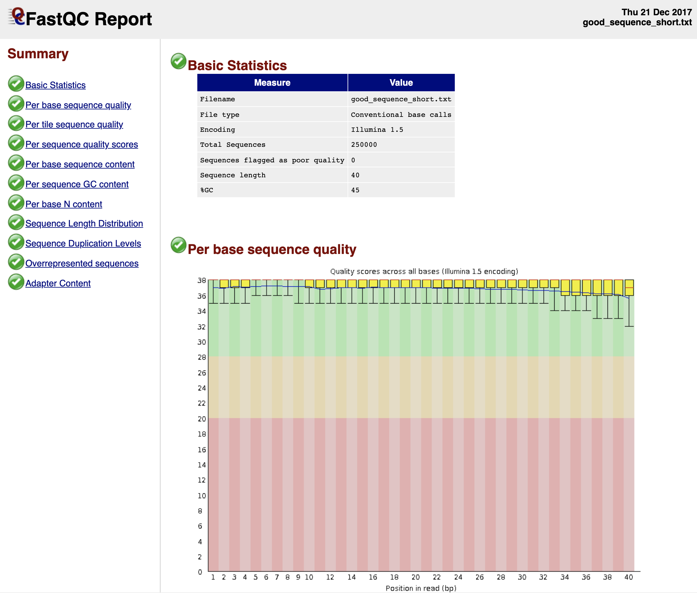
Alternatively, consider the example below, where Q-scores rapidly deteriorate as the position in the read increases. We can also see several other FastQC analysis modules failed for this sample.
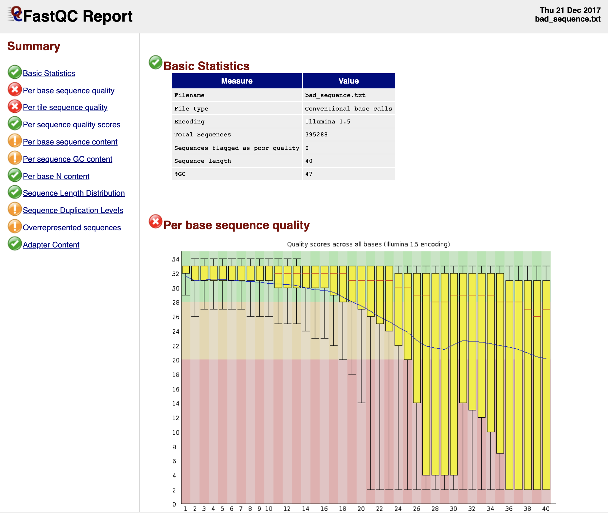
Lets have a look at some complete example QC reports from the FastQC documentation (above examples are from these reports from FastQC documentation):
Good Illumina Data FastQC Report
Bad Illumina Data FastQC Report
Lets run FASTQC on our data and move the results to a new directory.
# specify the -t option for multi threading to make it run faster, here we are using one because our files are small
fastqc -t 1 *.fastq.gz
# move results to a new folder
mkdir fastqc_results
mv *fastqc* fastqc_results
# move into it and ls
cd fastqc_results
ls -lah
Note: FastQC does not use the entire dataset, just the first few thousand reads in the FASTQ file, therefore there could be some bias introduced by this, although we assume there isn't since entires are placed into FASTQ files randomly.
Opening and evaluating an individual .html file for each FASTQ file is obviously going to be tedious and slow. Luckily, someone built a tool to speed this up. MultiQC
MultiQC searches a specified directory (and subdirectories) for log files from multiple common bioinformatics tools that it recognizes and synthesizes these into its own browsable, sharable, interactive .html report that can be opened in a web-browser.
Lets run MultiQC on our FastQC files:
multiqc .
Copy to report to your LOCAL MACHINE in a new folder and open in a web-broswer:
# make a directory and go into it (ON YOUR LOCAL MACHINE)
mkdir rnaseq_wrksp/
cd rnaseq_wrksp/
# use secure copy (scp) to download the files to your local machine
scp d41294d@discovery7.dartmouth.edu:/dartfs-hpc/scratch/omw/raw_data/fastqc_results/multiqc_report.html .
You can find the MultiQC report run on the complete dataset across all samples in the dataset in the github repository, under QC-reports. Lets open it and explore our QC data.
What do we think about the quality of our dataset?
Read pre-processing & trimming
An additional QC step we can perform before proceeding with the read alignments is to pre-process or trim the sequences in the FASTQ files to remove sequences that we are not interested in, or were not called confidently by the sequencer. This step is optional in most analysis, although should be based on an empirical decision that leverages the QC assessment of raw FASTQs. For example, if we see we have a large number of adapter sequences in our data, or a high proportion of low-quality bases near our read ends, we may wish to trim our raw reads. In the absence of such issues, we could skip this step.
Another reason this step is optional is that many aligners can account for mismatches or low quality bases at the end of reads during the alignment process. The aligner will soft-clip these bases from the alignment when it maps that read (more on this later) so we do not necessarily need to have these bases trimmed off all of the reads.
Principles of read trimming: Downstream steps are more efficient
Several algorithms exist for trimming reads in FASTQ format. Generally, these algorithms work by searching for matches to specified sequences at 5' and 3' ends of reads. Examples of sequences you might want to remove include:
- adapter sequences
- polyA tails
- low quality bases

Read trimming with cutadapt
Cutadapt is a useful tool for cleaning up sequencing reads, and allows for multiple adapters to be specified simultaneously, and has numerous options that can be tweaked to control its behavior.
Basic usage of cutadapt:
cutadapt -a ADAPTER -g ADAPT2 [options] -o output.fastq input.fastq.gz
-aspecifies an adapter to trim from the 3' end of read 1gspecifies an adapter to trim from the 5' end of read 1ospecifies name of out file
For paired-end reads:
cutadapt -a ADAPT1 -g ADAPT2 [options] -o out1.fastq.gz -p out2.fastq input1.fastq.gz input2.fastq.gz
Capital letters are used to specify adapters for read 2.
If we wanted to trim polyA sequences and save the output to a report called cutadapt.logout, we could use:
cutadapt -a 'A{76}' -o out.trimmed.fastq.gz input.fastq.gz > cutadapt.logout;
-a A{76} tells cutadapt to search for streches of A bases at the end of reads, with a maximum length of the read length (76bp).
Since the polyA and adapter sequence contamination is relatively low for this dataset, we won't trim any specific sequences, although we will perform basic quality and length processing of the raw reads. Lets make a new directory and do this for do this for one sample.
# go to parent directory using alias (or absolute/relative path)
rnaw
# make directory for results and move into it
mkdir ../../results/trim
cd ../../results/trim
# run cutadapt
cutadapt \
-o SRR1039508_1.trim.chr20.fastq.gz \
-p SRR1039508_2.trim.chr20.fastq.gz \
../../raw_data/SRR1039508_1.chr20.fastq.gz ../../raw_data/SRR1039508_2.chr20.fastq.gz \
-m 1 -q 20 -j 1 > SRR1039508.cutadapt.report
-mremoves reads that are smaller than the minimum threshold-qquality threshold for trimming bases - remember a score of 20 means 1 in 100 chance the base call is incorrect-jnumber of cores/threads to use
Cutadapt will identify full matches to the sequences you provide, as well as partial matches. The minimum number of base matches required for Cutadapt to trim a sequence can be controlled using the -o option (for overlap) which is set to 5 by default.
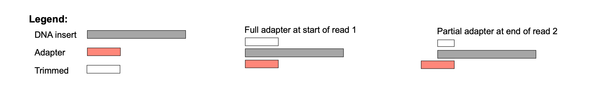
Now lets run this on all of our samples:
ls ../../raw_data/*.chr20.fastq.gz | while read x; do \
# save the file name
sample=`echo "$x"`
# get everything in file name after "/" and before "_" e.g. "SRR1039508"
sample=`echo "$sample" | cut -d"/" -f4 | cut -d"_" -f1`
echo processing "$sample"
# run cutadapt for each sample
cutadapt \
-o ${sample}_1.trim.chr20.fastq.gz \
-p ${sample}_2.trim.chr20.fastq.gz \
../../raw_data/${sample}_1.chr20.fastq.gz ../../raw_data/${sample}_2.chr20.fastq.gz \
-m 1 -q 20 -j 1 > $sample.cutadapt.report
done
You should now have trimmed FASTQ files in this directory that we will use for the alignment. You should also be able to see and print each of your reports from cutadapt.
ls *cutadapt.report | while read x; do
# print an empty line
echo '' \
# print name of report
echo Printing $x
# printa nother empty line
echo '' \
# print report
cat $x
done
Additional note: For data generated at Dartmouth, since much of the data in the Genomics core is generated using an Illumina NextSeq, we also often use the --nextseq-trim option in cutadapt.
This option works in a similar way to the quality threshold option -q BUT ignores Q-scores for stretches of G bases, as some Illumina instruments, such as the NextSeq, generate strings of Gs when when the sequencer 'falls off' the end of a fragment and dark cycles occur, and therefore provides more appropriate quality trimming for data generated on these instruments.
Challenge Exercises
Challenge exercise: Read trimming
We told you in the previous lesson that little adapter sequence contamination exists in this dataset. Use the skills you learn't in the last lesson to confirm this using cutadapt.
The adapter sequences for the kit used to generate these libraries (Illumina TruSeq) are provided below. Adapter sequences are only expected at the 3' end of reads in this dataset.
TruSeq adapter sequences:
- Read 1: AGATCGGAAGAGCACACGTCTGAACTCCAGTCA
- Read 2: AGATCGGAAGAGCGTCGTGTAGGGAAAGAGTGT
You may need to refer to the cutadapt documentation to assist you.
Day 2
Read Mapping
Read mapping And alignments
Learning objectives:
- Understand the major principles behind read mapping for RNA-seq data
- Learn how alignment data is stored in SAM/BAM format
- Learn how to perform basic operations on BAM files using
Samtools - Perform an alignment with
STAR - How to view alignments using the
Integrative genomics Viewer (IGV)
Make a new directory to work in:
# go to our home dir for the workshop
rnaw
# make the directory and cd into it
mkdir results/alignment
cd results/alignment
If you get lost, or do not have enough time to finish the commands before we move to the next session you can copy the files needed for the next step with the following command from the scratch directory you have created for yourself.
cp /dartfs-hpc/scratch/rnaseq1/data/bam/* results/alignment/
Principles of read mapping for RNA-seq
Reference Genomes
In RNA-seq, we use number of reads as a proxy for gene expression. In order to count reads overlapping each gene in a genome, we first need to map those reads onto a reference sequence. For well studied organisms that have previously been sequenced, we do this using a reference genome.
Reference genomes are built by sequencing a number of individuals to generate a single haploid mosaic sequence. This sequence represents an idealized sequence of an individual organism, and can be used as a scaffold in NGS experiment to determine the origin of sequence reads.
New versions of reference genomes are provided to the research community through releases. Below is an ideogram for the latest version of the human reference genome, GRCh38/hg38 generated by the Genome Research Consortium (GRC).
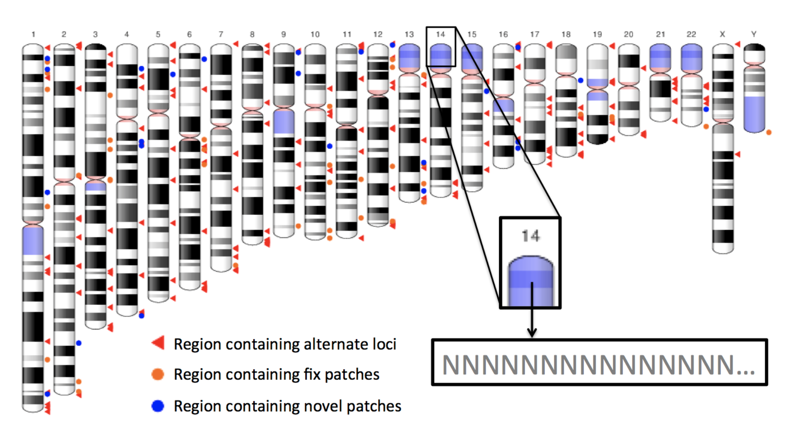
Unfortunately, reference genomes are a concept, not a reality, as they fail to represent genetic variation between individuals. GRCh38/hg38 differs substantially from the previous release (GRCh37/hg19)due to its use of alternate loci to represent population-level genetic variation.
Alternate loci are provided in addition to the primary assembly which refers to a non-redundant representation of a haploid genome, including chromosomes 1-22, plus chromosomes X, Y and MT (mitochondrial). For read mapping in RNA-seq, we usually want to use the primary assembly only, since alternate loci complicate the read mapping procedure.
Primary assemblies for many organisms can be downloaded from sites such as:
- Ensembl
- NCBI (Genome resource)
- UCSC Genome Browser
If working with human and mouse, primary assemblies can also be obtained the GENCODE Project, which also provides a number of high quality genome annotations.
Lets have a quick look at the human primary assembly:
# print first few lines
head /dartfs-hpc/scratch/rnaseq1/refs/Homo_sapiens.GRCh38.dna.primary_assembly.fa
# print last few lines
tail /dartfs-hpc/scratch/rnaseq1/refs/Homo_sapiens.GRCh38.dna.primary_assembly.fa
# print all header lines
grep ">" /dartfs-hpc/scratch/rnaseq1/refs/Homo_sapiens.GRCh38.dna.primary_assembly.fa
Mapping reads to a reference genomes
The goal of mapping reads to a reference genome is to find the most likely location in that reference genome where the read originated from. For RNA-seq, this means we try to find the most likely location in the reference genome that transcribed the RNA fragment which ultimately ended up in our cDNA library.
Although we won't go into theory here, aligning reads to reference genomes involves mapping to identify the most likely position of the read in the reference genome, followed by the alignment, which describes the base-by-base relationship between the read and the reference. Alignments are often imperfect, and are associated with quality scores (MAPQ scores) that describe the quality of the alignment.
The cartoon below depicts a typical read mapping scenario for an RNA-seq experiment.

Challenges of aligning millions of short reads to a reference genome involve:
- Mismatches introduced by genetic variation and sequencing errors
- Repetitive sequences in genomes (e.g. start and end of chromosomes)
- Presence of intron in reference genomes, meaning aligners must be able to consider splice-junctions
Numerous aligners exist that strike a balance of various features to address these challenges. It is important to choose one that is appropriate for your dataset. Importantly, some aligners are splice-aware while others are not. Splice-aware aligners can generate alignments to a reference genome that span the intronic regions and therefore account for splicing, e.g. STAR and HISAT2.
If your dataset is prokaryotic (non-splicosomal) you would not want to use a splice-aware aligner, and instead using an aligner that is not designed to map across intronic regions such as bwa-mem or bowtie2 (more on this later).
What if no reference genome is available?
If you are working with an organism for which no high quality reference genome or genome annotation exists, or you wish to identify novel transcripts, you will need to perform a transcriptome assembly. Fundamentally, assembly tools use alignment gaps to infer presence of transcript isoforms.
Multiple approaches for transcriptome assembly exist, and generally fall into 1 of 3 categories:
- Reference-based assembly
- De novo assembly
- Hybrid approach (depicted in figure below below)
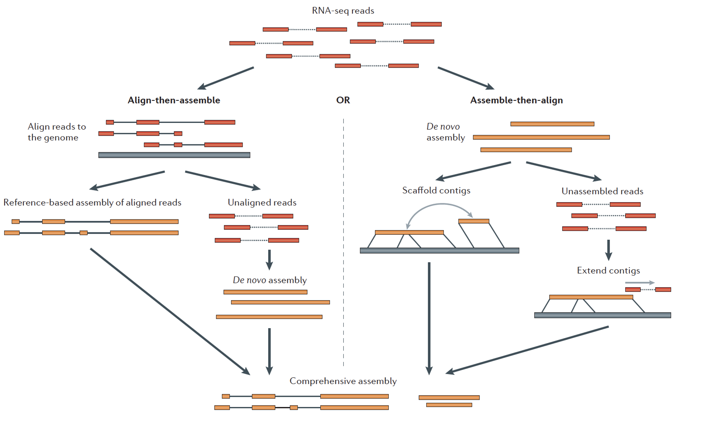
Figure from Martin & Wang, 2011, Nat. Rev. Gen: Next-generation transcriptome assembly.
Although we won't go into assembly methods in detail during this workshop, it is useful to have a general understanding of what these methods entail. Examples of specific tools designed for transcriptome assembly include:
- StringTie
- SOAPdenovo-Trans
- Cufflinks
Early approaches for transcriptome assembly are reviewed in Martin & Wang, 2011, Nat. Rev. Gen.
Concepts for read alignment
Read clipping
Aligners are capable of 'clipping' reads from sequence ends if they do not improve the quality of an alignment that exists for the rest of the sequence.
Types of clipping:
- Soft-clipping: bases at 5' and 3' ends of the read will be kept in the read sequence in the BAM file, but are NOT part of the alignment
- Hard-clipping: bases at 5' and 3' ends of the read will be removed from the BAM file altogether and are NOT part of the alignment
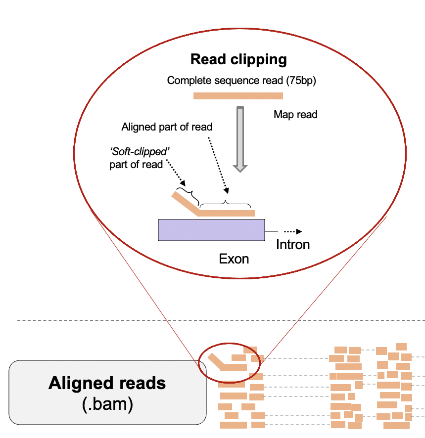
Such clipping is commonly used by aligners to get rid of sequence contamination, e.g. adapter sequences or polyA tails from mRNAs, so that it does not affect the alignment. At least for RNA-seq, this is why you do not necessarily need to be very aggressive in read trimming and pre-processing steps.
Clipping can be very advantageous, but also can potentially cause some issues, read more here.
Splicing
As discussed above, numerous aligners exist, consisting of both splice-aware and splice-unaware aligners. Splice-aware aligners, such as STAR and HISAT2 will produce alignments spanning splice junctions, which is obviously an important characteristic that the aligner needs to be able to account for in the human RNA-seq dataset that we are working with today. Furthermore, if you provide coordinates of splice-junctions to aligners like STAR, it can improve the mapping over spliced regions and improve detection of novel splice-functions.
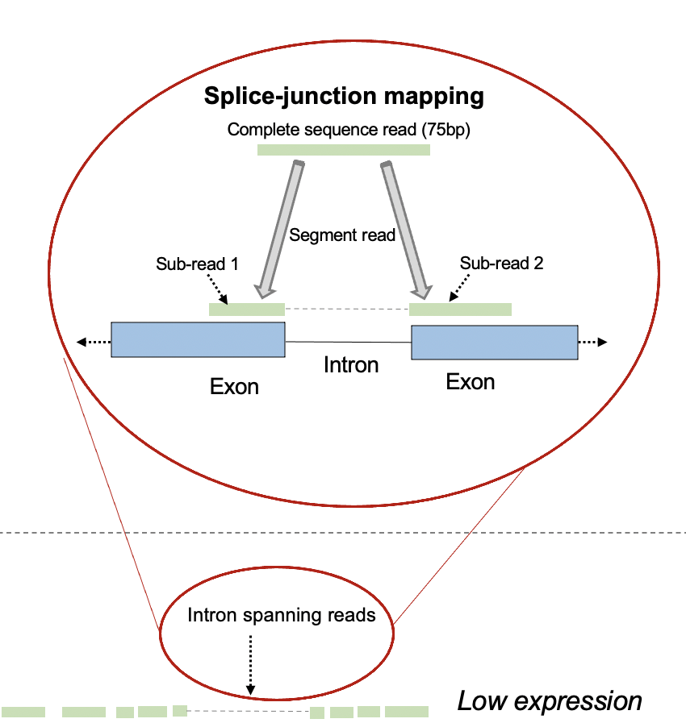
Genome vs transcriptome mapping?
While there are times when one may want to map to a transcriptome, there are issues with this approach.
- If your annotated transcriptome is not complete, you may fail to map some reads simply because the sequences aren't in your reference, which would not be an issue if you mapped to the genome.
- With multiple splice isoforms it is difficult to disambiguate which splice isoform a read should be aligned to in transcriptome mapping.
- You cannot identify novel transcripts this way.
What input do I need for an alignment?
At minimum:
- FASTQ file(s)
- A reference genome (.fasta)
Optional:
- .gtf file for the reference genome that species the genomic feature annotation. As mentioned above, if you know where the splice-junctions in your genome are, you can give this to aligners such as STAR and they will use this information to improve the quality of mapping in these regions.
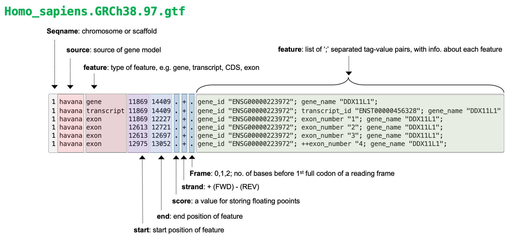
Alignment file formats
Alignments are stored in the SAM (.sam) and BAM (.bam) file format. SAM stands for Sequence Alignment/Map) format, essentially a tab-delimited text file (human readable file).
BAM files are compressed, indexed, binary version of SAM files and are NOT human readable, but are much faster to parse and do complex downstream operations on. You can read all about the SAM/BAM file format specification in the documentation here.
SAM/BAM files contain a number of slots for each alignment that describe its characteristics. 11 slots are mandatory, while others are optional and depend on the aligner and settings used.
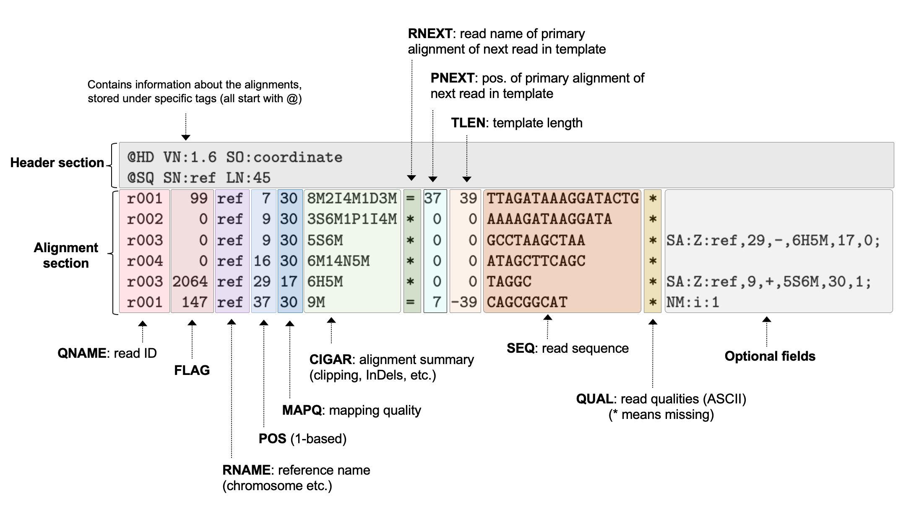
The image for the example BAM file is adapted from the SAM/BAM file format documentation
Notes on select fields:
FLAG:
Encodes important information about the read, for example, is it a primary, secondary, or supplementary alignment. Since a single read will likely have a number of properties that we want to 'flag', SAM files use a special way of encoding the FLAG field to pack as much information as possible into a single number. While we won't go into detail on this here, SAM/BAM file use a bit-wise system to combine information across flags into a single integer. I encourage you to go read more about FLAGs and how they are specified in the SAM/BAM documentation.
The Broad institute provides an excellent tool for decomposing SAM flags into the properties of the read that make up a specific FLAG value.
This command will provide basic information on FLAGs from samtools.
samtools flags
The values shown here relate to the hexadecimal system
MAPQ:
Corresponds to the quality of the mapping. These are calculated in the same way as the Phred scores Q = -10 x log10(P), although are generally considered to be a best guess from the aligner. A MAPQ of 255 is used where mapping quality is not available. Some aligners also use specific values to represent certain types of alignments, which may affect use of downstream tools.
We won't go into MAPQ scores in detail here however this article: (More madness with MAPQ scores (a.k.a. why bioinformaticians hate poor and incomplete software documentation) nicely summarizes some of the differences between MAPQ scores generated by different aligners.
CIGAR
An alphanumerical string that tells you information about the alignment. For relatively short reads, these are nice, but for long reads, they are a headache. Numbers correspond to number of bases, and letters correspond to features of those bases.
| CIGAR value | Meaning |
|---|---|
| M | match or mismatch |
| S | soft clip |
| H | hard clip |
| I | insertion |
| D | deletion |
| N | skipping |
So for example, alignment in row 3 of our SAM file example above (5S6M) would describe an alignment where 5 bases are soft-clipped, followed by 6 matching bases.
STAR (Spliced Transcripts Alignment to a Reference)
STAR is a very flexible, efficient, and quick read aligner. It uses a method of seed searching, clustering, stitching, and scoring to find the most probable match in the reference sequence for each read.
STAR is a gapped aligner that is capable of generating alignments spanning introns but can allow for shorter mismatches such as SNPs, INDELs, or incorrect base calls. Read contamination, adapter sequences, or low quality bases can all be removed from alignments by soft-clipping.
You can find the STAR user manual here and the original manuscript here.
Constructing a genome index
Before mapping your reads with STAR, you must create an index of your reference genome, and specify the location of this index when you run the aligner. The index is in principle similar to how one might index a book, so that specific items or information can be found more quickly. For the genome index, we are indexing the genome so that the aligner can narrow down where a read may map to and speed up mapping.
For the purposes of this workshop and saving time, we have pre-built created a small genome index consisting of only chromosome 20, and will be using a subset of the total reads sequenced for sample SRR1039508 which are known to align to chromosome 20. In practice you would use the entire genome to generate the index. This step is time consuming so we won't run it now, but the command used to create the index we will use is:
### DO NOT RUN DURING WORKSHOP (TIME CONSUMING:)
STAR --runThreadN 16 \
--runMode genomeGenerate \
--genomeDir hg38_chr20_index \
--genomeFastaFiles Homo_sapiens.GRCh38.dna.primary_assembly.chr20.fa \
--sjdbGTFfile Homo_sapiens.GRCh38.97.chr20.gtf \
--genomeSAindexNbases 11
Option details:
- --runThreadN: no. of core/threads you want to use
- --runMode: the mode you want to run STAR in (for index generation, this should be genomeGenerate)
- --genomeDir: directory you want your genome to go to
- --genomeFastaFiles: path to genome .fasta
- --sjdbGTFfile: path to genome annotation in .gtf format
- --sjdbOverhang: default is 100, usually set to the readlength -1
You can find the pre-built index at /dartfs-hpc/scratch/rnaseq1/refs/hg38_chr20_index/.
Once you have generated an index, it is best not to do anything with it, except tell STAR where it is when you want to align reads.
Aligning the reads
We are ready to align our reads to the genome, using the subset of reads sequenced for sample SRR1039508 that are known to align to chromosome 20 (files: SRR1039508_1.trim.chr20.fastq.gz and SRR1039508_2.trim.chr20.fastq.gz).
STAR --genomeDir /dartfs-hpc/scratch/rnaseq1/refs/hg38_chr20_index \
--readFilesIn ../trim/SRR1039508_1.trim.chr20.fastq.gz ../trim/SRR1039508_2.trim.chr20.fastq.gz \
--readFilesCommand zcat \
--sjdbGTFfile /dartfs-hpc/scratch/rnaseq1/refs/Homo_sapiens.GRCh38.97.chr20.gtf \
--runThreadN 1 \
--outSAMtype SAM \
--outFilterType BySJout \
--outFileNamePrefix SRR1039508.
NOTE: I usually set
outSAMtypetoBAM SortedByCoordinate, so that I do not need to convert the default SAM file output by STAR to BAM, then sort it. However, since we want to look inside the file at the alignments, we are creating a SAM first, and will convert to a BAM afterwards.
Option details:
- --genomeDir: the path to the directory with genome indices
- --sjdbGTFfile: the path to the annotation file that includes coordinates of splice-junctions
- sjdbOverhang: length of the sequence around the splice junction to be used in constructing the splice junctions database
- --runThreadN: number of threads to use in the run
- --outFilterType: how mapped reads will be filtered (normal/BySJout)
- --outSAMtype: (SAM/BAM unsorted/ BAM SortedByCoordinate)
- --readFilesIn: read files to map to reference alignment
- --readFilesCommand: uncompression command to apply to read files
- --outFileNamePrefix: prefix for outfiles generated in the run
Now, wait...
There are a number of other options you may wish to specify, depending on your application and downstream analysis. These are the barebones options suggested for RNA-seq and optimized for mammalian genomes. Again, I encourage you to go look through the user manual if you plan to use STAR.
Aligment output
Once the alignment has finished, you should have a number of new files in your directory. These are composed of:
- .sam - your alignment file
- Log.out - the log of the STAR run
- Log.final.out - the summary file of the mapping statistics
- Log.progress.out - a summary file that is updated with key mapping statistics as the run progresses
- SJ.out.tab - high-confidence splice-functions
It is very important to do a detailed quality control review of your alignments across all your samples to identify any potential issues. We are going to (later) build a detailed multi-sample QC report using an independent tool, however we can have a quick look at the Log.final.out file from STAR as this contains the major mapping stats that we want to look at to assess how well reads were mapped to the reference.
cat SRR1039508.Log.final.out
Working with SAM/BAM files
We can also have a look around our SAM file to get to know it a bit better. Several tools exist that enable you to perform operations on SAM/BAM files. samtools is perhaps the most widely used of these. You can find the documentation here.
Lets use samtools to have a look at the header for our SAM file
samtools view -H SRR1039508.Aligned.out.sam | head
Lets also have look at the first few alignment records in our BAM file
samtools view SRR1039508.Aligned.out.sam | head
It is common to sort SAM/BAM files as this is required by many downstream tools that take alignment files as input.
samtools sort SRR1039508.Aligned.out.sam -o SRR1039508.Aligned.out.sorted.sam
In practice, we can ask programs like STAR to give us indexed and sorted BAM files as output from the alignment, however this is not the case with all aligners and in these cases you will have to sort and index files after the alignment is complete. Now that we've looked at the alignments, we should convert our SAM to BAM for indexing and downstream analysis.
samtools view -S -b SRR1039508.Aligned.out.sorted.sam > SRR1039508.Aligned.out.sorted.bam
We should also index this BAM, which will create a file with the same name, but the suffix .bai.
samtools index SRR1039508.Aligned.out.sorted.bam
Another useful thing we might want to do with our BAM file is to count how many alignments have specific FLAG types (unique alignments, secondary, unmapped, properly paired).
samtools flagstat SRR1039508.Aligned.out.sorted.bam
We can even use the specific FLAGs in the BAM file to extract specific alignments. For example, you might want to produce BAM files where all of the reads mapping to the forward and reverse strands are in separate files:
# use -F option in view to filter out reads with REV alignment flag (16), leaving only FWD alignments
samtools view -F 16 SRR1039508.Aligned.out.sorted.bam -o SRR1039508.Aligned.out.sorted.FWD.bam
samtools view -c SRR1039508.Aligned.out.sorted.FWD.bam
# use -f option in view to kepp reads with REV alignment flag (16), leaving only REV reads
samtools view -f 16 SRR1039508.Aligned.out.sorted.bam -o SRR1039508.Aligned.out.sorted.REV.bam
samtools view -c SRR1039508.Aligned.out.sorted.REV.bam
You might just want to go straight to counting how many reads have a particular SAM flag
# count how many reads are NOT a primary alignment (FLAG=256)
samtools view -c -F 256 SRR1039508.Aligned.out.sorted.REV.bam
The Integrative Genomics Viewer (IGV)
The Integrative Genomics Viewer (IGV) is a very powerful piece of genomics software produced and distributed by researchers from the Broad Institute at MIT. IGV provides a fast and easy way to explore and visualize genomics data stored in various formats. In particular, IGV provides an effective way to review read alignments.
Below we will briefly introduce IGV, before loading in the BAM file we created above, and exploring how we can use IGV to explore RNA-seq read alignments,
The IGV user interface (UI) and basic navigation
The layout of the IGV desktop application is relatively simple and easy to use after you familiarize yourself with the layout of the user interface.
Some of the main UI features include:
* Currently loaded genome - Shown in top left. Drop down menu allows you to toggle between pre-packaged genomes or access those available from the IGV server. Genomes can also be loaded using the File tab.
-
Current chromosome/contig - Name of the chromosome, contig, or other sequence type currently being shown. Can be changed using drop down menu.
-
Current region of chromosome/contig - Coordinates in the form chr:start-end can be copied and pasted here directly to navigate to a region. Gene names can also be used (dependent upon the loaded annotation).
-
Zoom bar - Zoom in and out of the currently shown region
-
Schematic of currently loaded chromosome or contig - Red box indicates location of the region you are currently viewing. Full width of current region is shown below, with a scale bar indicating specific coordinates. Both can be used to navigate directly.
-
Gene track - Shows gene included in currently loaded annotation (Refseq genes in example). Right click track for additional formatting options. Features included in annotation are indicated by thickness (introns, exons, UTRs). Gene orientation is shown with arrows pointing right for FWD/+, left for REV/- strand.

Viewing RNA-seq alignments with IGV
Alignments generated from different types of genomics data will look unique in IGV. For example, alignments from an RNA-seq experiment will look different from those generated in a ChIP-seq experiment.
As RNA-seq involves profiling the transcriptome, read alignments in RNA-seq data should only appear at the coordinates of exons. If you see many reads located in introns or intergenic regions, you libraries may have been contaminated with genomic DNA. The number of alignments found at the exons of each gene tells us about the expression level of that gene: more alignments means greater expression. This is shown in the example below.
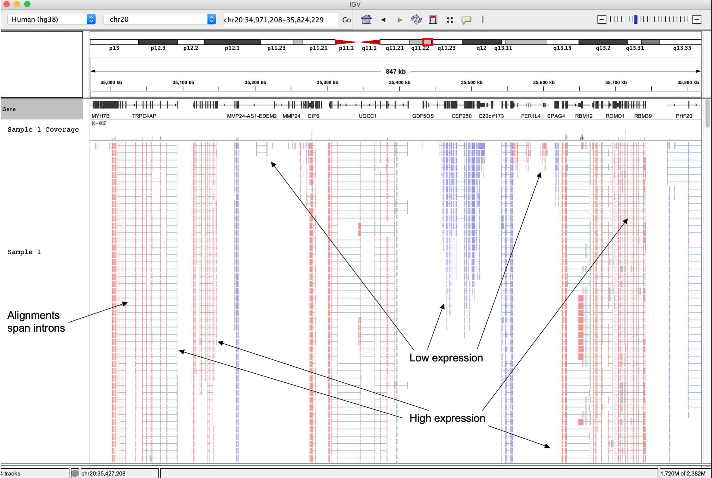
We will now download a BAM onto our local machines, and view it using the IGV. You should have all installed IGV onto your local machine.
# make a directory and go into it (ON YOUR LOCAL MACHINE)
mkdir rnaseq_wrksp/˘
cd rnaseq_wrksp/
# download the file using secure copy (scp)
##### modify this for your discovery ID. This points to a common directory of the aligned files, for viewing purposes. You may specify the directory with your own alignments if you wish.
# download the BAM file
scp d41294d@discovery7.dartmouth.edu:/dartfs-hpc/scratch/omw/results/alignment/SRR1039508.Aligned.out.sorted.bam ./
##### you will be promoted for your password for discovery
# download the index for the BAM (.bai file)
scp d41294d@discovery7.dartmouth.edu:/dartfs-hpc/scratch/omw/results/alignment/SRR1039508.Aligned.out.sorted.bam.bai ./
# you may also need to modify the permissions
chmod a+rwx *.bam*
If you were not able to generate the above files, you can download a public versions below:
scp d41294d@discovery7.dartmouth.edu:/dartfs-hpc/scratch/rnaseq1/data/bam/SRR1039508_1.Aligned.sortedByCoord.out.chr20.bam ..
scp d41294d@discovery7.dartmouth.edu:/dartfs-hpc/scratch/rnaseq1/data/bam/SRR1039508_1.Aligned.sortedByCoord.out.chr20.bam.bai ..
Open IGV, and follow the below steps:
1. Using the drop down menu in the top left of the pane, make sure 'Human (hg38)' is selected.
2. Under 'File' select 'Load from file', then navigate to your .bam file and select it
3. Navigate to chromosome 20, and zoom in to see genes and individual alignments
4. Right click in the alignments track and under 'Color alignments by' select read strand
5. In the search bar, type in gene SAMHD1
Discussion points:
- What do you notice about the orientation of the aligning reads?
- Do you think this gene is expressed in this sample? What about relative to nearby genes?
- Is there potentially going to be any ambiguity in read quantification for SAMHD1, given that our library was generated using a unstranded protocol?
- How does IGV know where to put these reads, set their orientations, show if they are in a pair, etc.
Run the alignment for all samples
Now run the mapping workflow to generate alignments for all of the samples together.
ls ../trim/*_1.trim.chr20.fastq.gz | while read x; do
# save the file name
sample=`echo "$x"`
# get everything in file name before "/" (to remove '../trim/')
sample=`echo "$sample" | cut -d"/" -f3`
# get everything in file name before "_" e.g. "SRR1039508"
sample=`echo "$sample" | cut -d"_" -f1`
echo processing "$sample"
# run STAR for each sample
STAR --genomeDir /dartfs-hpc/scratch/rnaseq1/refs/hg38_chr20_index \
--readFilesIn ../trim/${sample}_1.trim.chr20.fastq.gz ../trim/${sample}_2.trim.chr20.fastq.gz \
--readFilesCommand zcat \
--sjdbGTFfile /dartfs-hpc/scratch/rnaseq1/refs/Homo_sapiens.GRCh38.97.chr20.gtf \
--runThreadN 1 \
--outSAMtype BAM SortedByCoordinate \
--outFilterType BySJout \
--outFileNamePrefix ${sample}.
done
# index the BAMs
for i in *.bam; do samtools index $i; done
Note that I change --outSAMtype to BAM sortedByCoord so that we don't have to convert SAM to BAM and run sort.
View the reports quickly:
ls *Log.final.out | while read x; do
# print empty line
echo ''
echo Printing $x
# print another empty line
echo ''
# print report
cat $x
done
Now we can move on to do a comprehensive QC analysis of our alignments.
Generating alignments is the most time consuming step of the analytical pipeline for most NGS analyses. For RNA-seq, 'lightweight' alignment and quantification tools have been developed that are extremely fast, e.g. Kallisto, Salfish, and Salmon. These algorithms avoid generation of typical base-by-base alignments, and instead generate psuedo-alignments, which have been shown to produce accurate estimates of transcript abundances in RNA-seq data, although can be inaccurate for low-abundance or short transcript (discussed in Wu et al, 2018.)
Alignment QC
Part 3 - Post-alignment QC
Learning objectives:
- Gain understanding of the key QC metrics used to evaluate quality of RNA-seq alignments
- Learn what values represent acceptable quality alignments
- Learn how to calculate RNA-seq QC metrics & synthesize them into a report
Lets make a new directory to work in:
# go to our home dir for the workshop
rnaw
# make a new dir for qc
mkdir results/alignment.qc
cd results/alignment.qc
If you get lost, or do not have enough time to finish the commands before we move to the next session you can copy the files needed for the next step with the following command from the scratch directory you have created for yourself.
cp /dartfs-hpc/scratch/rnaseq1/data/qc/alignment/* results/alignment.qc/
Principles of post-alignment QC
Once you have mapped your reads, it is important to assess the efficiency of read mapping and overall quality of your alignments. The primary metric of a successful mapping is the percentage of reads that could be successfully mapped. While this depends on the reference genome, a good quality sample is expected to have ~75% of its reads successfully mapped.
As we did earlier, we can find this information, as well as the number of unmapped and multi-mapping reads, in the final.out file generated by STAR:
cat ../alignment/SRR1039508.Log.final.out
However, there are several other valuable QC metrics that allow us to identify potential issues or biases that may exist in the data. These include:
-
Proportion of ribosomal RNA (rRNA) reads: rRNA constitutes the large majority of RNA present in many cell types, but are not usually of interest to us. Through rRNA depletion and polyA selection procedures in library preparation, we can reduce the proportion of rRNA in our final library. If the proportion of rRNA reads is high, you should filter these reads before downstream analysis.
-
Genomic context of reads: We expect the majority of our reads to map in coding/UTR regions, with few reads in intronic or intergenic regions. If the proportion of intronic or intergenic reads is high, this could suggest your library is contaminated with genomic DNA, or the annotation provided for the reference genome is incomplete.

Fig. 1. Genomic context of aligned reads can fall into several categories dictated by the annotation used.
- Gene body coverage: Depending on the type of library protocol used, you will have an expectation for the average distribution of reads over gene bodies. For full-length transcript methods, you expect coverage over the entire body of a gene, however for 3'-end methods (e.g. QuantSeq) you expect a heavy 3' bias. Any significant deviations from expected can indicate sample quality problems that may be reflective of issues in library preparation.
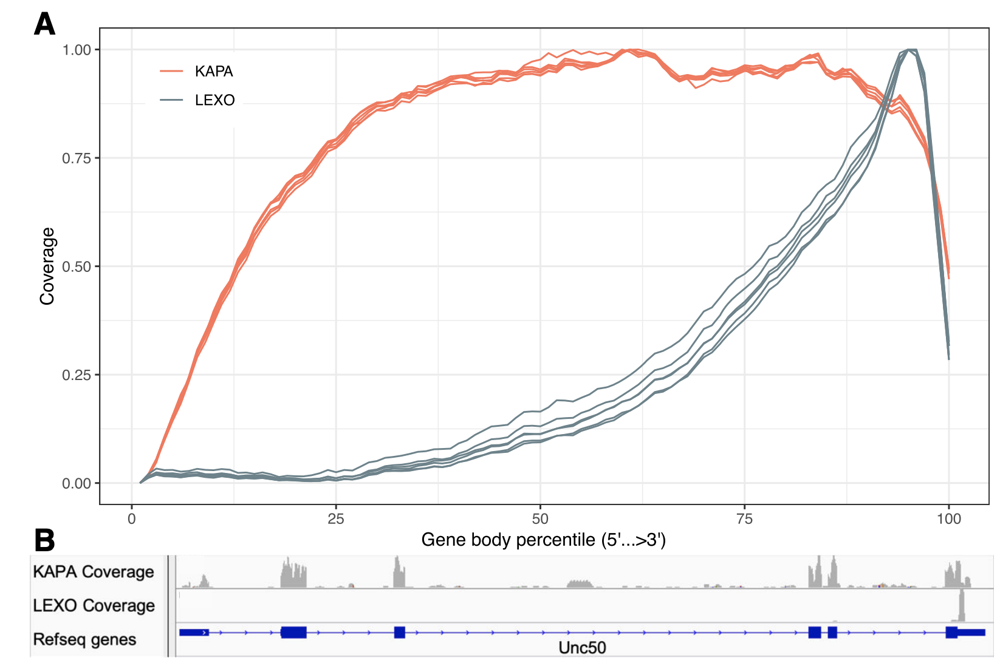
Fig. 2. Comparison of gene-body coverage for KAPA & Lexogen RNA-seq libraries. Image from: Ma et al, 2019, BMC Genomics.*
- Strand specificity: For stranded library-preparation protocols, we expect almost all the reads to come from the expected strand (e.g. REV for KAPA libraries, FWD for QuantSeq 3' libraries. For non-stranded protocols, the distribution of reads should be equally split between FWD and REV.
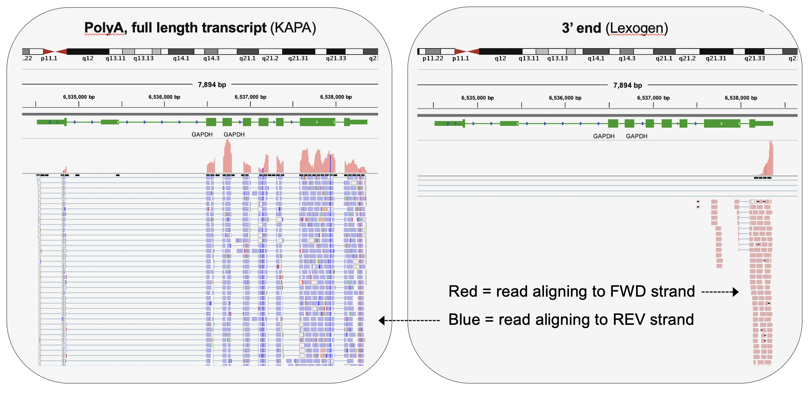
Fig. 3. Strand orientation is dependent on library preparation method.*
CollectRNASeqMetrics (Picard tools)
Picard tools (Star-trek) provides a useful tool, called CollectRNASeqMetrics that calculates these metrics, taking the alignment SAM/BAM file as input, and returning a text file with the suffix .output.RNA_Metrics.
To run CollectRNASeqMetrics on this dataset, we would run:
picard CollectRnaSeqMetrics \
I=../alignment/SRR1039508.Aligned.sortedByCoord.out.bam \
O=SRR1039508.output.RNA_Metrics \
REF_FLAT=/dartfs-hpc/scratch/rnaseq1/refs/Homo_sapiens.GRCh38.97.chr20.refFlat.txt \
STRAND=NONE \
RIBOSOMAL_INTERVALS=/dartfs-hpc/scratch/rnaseq1/refs/Homo_sapiens.GRCh38.97.rRNA.chr20.interval_list
Option descriptions:
- I=input aligned bam file
- O=output RNAseq metrics
- REF_FLAT=Gene annotations in refFlat form. Format described here
- STRAND= For strand-specific library prep. (e.g. use - FIRST_READ_TRANSCRIPTION_STRAND if the reads are expected to be on the transcription strand, as in the 3'-end QuantSeq assay).
- RIBOSOMAL_INTERVALS= Location of rRNA sequences in genome, in interval_list format. If not specified no bases will be identified as being ribosomal. Format described here.
cat SRR1039508.output.RNA_Metrics
Read duplicates in RNA-seq
Library preparation for RNA-seq generally involves PCR amplification of the input material to generate enough cDNA for sequencing. PCR amplification generates duplicate reads, which share the exact same coordinates when both mapped onto a reference genome.
PCR duplicates can introduce bias into RNA-seq libraries as it is known not all sequences are amplified as efficiently as others during PCR.
Factors affecting amplification bias include:
- GC content
- Fragment length
PCR duplicates
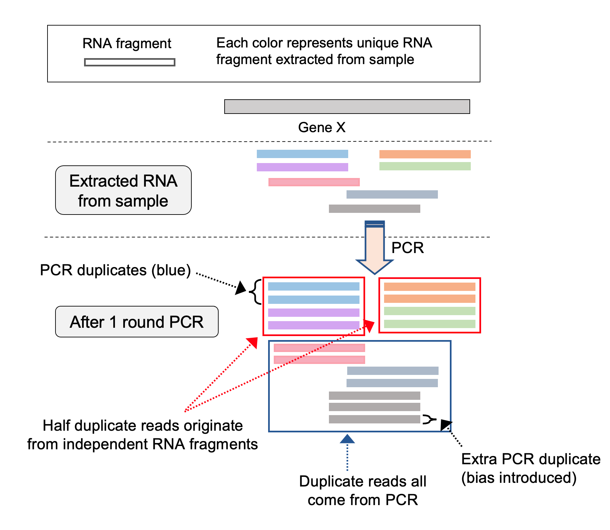
Removal of true duplicate reads would be the ideal solution to prevent bias, however identification of duplicates in RNA-seq is complicated as we expect some read duplicates to occur in RNA-seq data naturally. For example, highly expressed genes contribute many RNA fragments to the original sample, and by chance some are likely to share the same coordinates once mapped onto a reference genome.
Distinguishing true duplicate reads originating from independent RNA fragments from PCR duplicates is not possible in most RNA-seq data, and cannot be done effectively for single-end datasets (UMIs, Unique Molecular Identifiers, are needed).
On certain Illumina sequencers, an independent type of duplicate can occur, called optical duplicates, where large clusters formed on the flowcell during sequencing are called as two separate clusters.
Duplicate removal
Generally, most people do not remove duplicates from their RNA-seq data, as studies have shown that their presence does not substantially bias differential expression analysis or dramatically reduce statistical power, provided the library is sufficiently complex. Furthermore, de-duplication could introduce its own form of bias as read duplicates from separate RNA fragments will be incorrectly merged.
There is still value in checking the levels of read duplication among your aligned reads, to ensure extreme levels of duplication do not exist. We can do this with the MarkDuplicates from Picard Tools. MarkDuplicates works by comparing the coordinates, orientation, and sequence of read pairs in an input SAM/BAM file. Completion of MarkDuplicates will generate a text file with the suffix xxx.markduplicates_metrics.txt that documents key duplication statistics that can be included in our QC report.
To run MarkDuplicates, we call the jar file for Picard tools and specify the input SAM/BAM file.
picard MarkDuplicates \
I=../alignment/SRR1039508.Aligned.sortedByCoord.out.bam \
O=SRR1039508.Aligned.out.sorted.dups.marked.bam \
M=SRR1039508.dups.out \
OPTICAL_DUPLICATE_PIXEL_DISTANCE=100 \
CREATE_INDEX=false
Option descriptions:
- I=input aligned bam file
- O=output with duplicate reads marked
- M=file to write duplication metrics to
- OPTICAL_DUPLICATE_PIXEL_DISTANCE= The maximum offset between two duplicate clusters in order to consider them optical duplicates
- CREATE_INDEX=(TRUE/FALSE) Whether to create a BAM index when writing a coordinate-sorted BAM file.
We then just need to make sure the xxx.markduplicates_metrics.txt file is included a subdirectory when we run MultiQC, and it will be included in the report. Lets also just have a quick look at it now.
cat SRR1039508.dups.out
Additional note: If you have very low levels of starting material that will require a lot of PCR amplification, if you plan to sequence very deeply, or if removal of true duplicate reads is of particular importance to your experiment, you should consider using a library preparation method that leverages unique molecular identifiers (UMIs), which allow true read duplicates to be effectively identified and removed.
Run CollectRNASeqMetrics and MarkDuplicates on all samples
ls ../alignment/*.Aligned.sortedByCoord.out.bam | while read x; do
# save the file name
sample=`echo "$x"`
# get everything in file name before "/" (to remove '../alignment/')
sample=`echo "$sample" | cut -d"/" -f3`
# get everything in file name before "_" e.g. "SRR1039508"
sample=`echo "$sample" | cut -d"." -f1`
echo processing "$sample"
# run CollectRnaSeqMetrics
picard CollectRnaSeqMetrics \
I=../alignment/${sample}.Aligned.sortedByCoord.out.bam \
O=${sample}.output.RNA_Metrics \
REF_FLAT=/dartfs-hpc/scratch/rnaseq1/refs/Homo_sapiens.GRCh38.97.chr20.refFlat.txt \
STRAND=NONE \
RIBOSOMAL_INTERVALS=/dartfs-hpc/scratch/rnaseq1/refs/Homo_sapiens.GRCh38.97.rRNA.chr20.interval_list
# run MarkDuplicates
picard MarkDuplicates \
I=../alignment/${sample}.Aligned.sortedByCoord.out.bam \
O=${sample}.Aligned.sortedByCoord.dups.marked.bam \
M=${sample}.dups.out \
OPTICAL_DUPLICATE_PIXEL_DISTANCE=100 \
CREATE_INDEX=false ;
done
This will take a few minutes.. read what is being printed to the screen to get an idea for what Picard is doing.
Make the QC report with MultiQC
Viewing each of the outputs from the aligner, CollectRNASeqMetrics, MarkDuplicates, etc. would obvbiously be very tedious, so we need some way of aggregating all of these data into one place so that we can compare across the whole dataset. Like we did earlier, we can use MultiQC to synthesize a QC report, as it recognizes output from CollectRNASeqMetrics and MarkDuplicates.
# move STAR final.out files over to /alignment.qc
mv ../alignment/*.final.out ./
# run multiqc on /alignment.qc/
multiqc . --filename "multiqc.alignment.qc"
Now go to your local machine and use secure copy (scp) to download the report
#### ON YOUR LOCAL MACHINE ####
cd ~/rnaseq_wrksp
### Make sure to change the netID to your own and the initials to the ones for your own scratch drive!!
scp d41294d@discovery7.dartmouth.edu:/dartfs-hpc/scratch/omw/results/alignment.qc/multiqc.alignment.qc.html ./
If you were unable to generate your own report, you can download a public version of the file here:
### Make sure to change the netID to your own and the initials to the ones for your own scratch drive!!
scp d41294d@discovery7.dartmouth.edu:/dartfs-hpc/scratch/rnaseq1/data/qc/alignment/multiqc.alignment.qc.html ./
Open this report and have a look at it, but also open the report for post-alignment QC in the GitHub repo you download, located in Bulk-RNA-seq_workshop_Part-1_June-2021/QC-reports/. The report we generated is only for samples mapped to chr20, so the QC metrics will look a little spotty and are less representative of what you would see in a standard experiment. The QC report in the GitHub repo has been generated using all samples with reads mapping to all chromosomes. We will have a look through this together now.
You report should look like this:
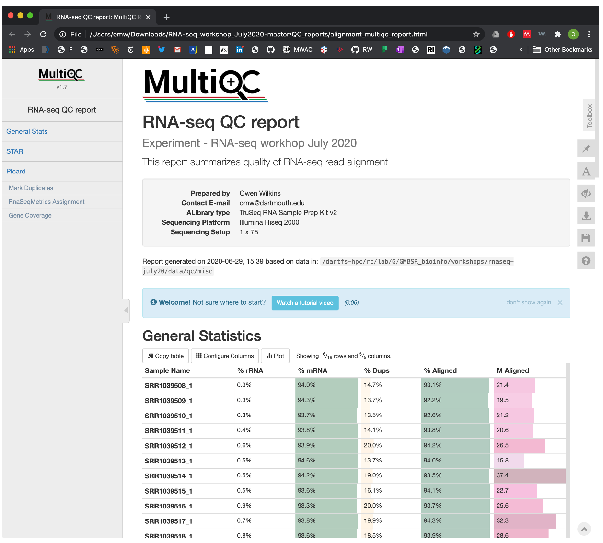
How does the quality look?
Do you think there is cause for concern for any samples?
General notes:
- Overall, the quality of these samples looks great. Most samples have at least 20 million aligned reads, with > 90% of the initial read successfully aligned in all samples.
-
Additionally, >90% of reads map to mRNA features, confirming that our annotation is likely of good quality, and we don't have much contamination from genomic DNA, PCR artifacts, or other species. In the
RnaSeqMetricssection, you can hover over individual samples and see the proportion of reads mapping to intronic or intergenic sequences is very small. -
~75% of our aligned reads are unique (not duplicates), which is perfectly acceptable in an RNA-seq experiment
-
Coverage is well normalized over the length of the average gene, indicating we do not have any significant 3'-bias in these data
-
The only possible issue I would note is that one sample seems to have slightly fewer total aligned reads than the others, with ~15 million. This isn't necessarily a problem, and is likely related to the amount of input material and/or its quality, and if I have done a good job of tracking sample metadata, such as the the RNA QC scores, I could test this hypothesis. I might also be careful not to make any inferences from this sample that would need to be based off deeper sequencing (e.g. identifying a novel splice junction).
Note: Since we set the STRAND option in CollectRNASeqMetrics to NONE (as this is an unstranded dataset) there is no section in the report for strand specificity. If your library is stranded, and you told CollectRNASeqMetrics the correct strand that you expect your reads to be on, you should see that >99% of your reads are on the expected strand. If they are not, you either specified the wrong strand, or there was a problem in library prep. and your strand-synthesis was not very effective. An example from a good dataset is shown below:
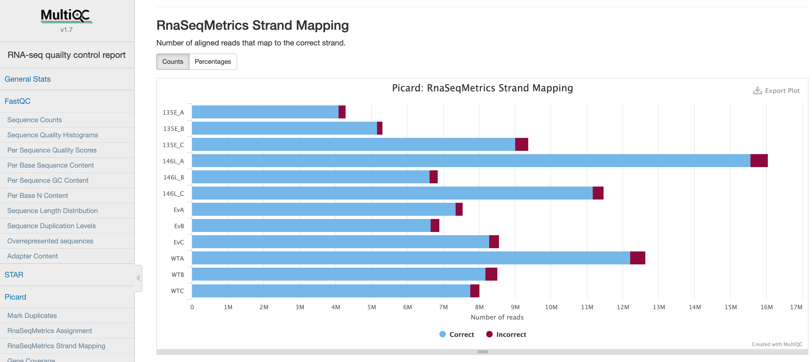
Challenge Exercise
Prokaryotic Alignment
Earlier today we used STAR to align human genomes to the hg38 reference genome using a splice aware aligner. In some cases a splice aware aligner is not appropriate for the dataset. One example of this are prokaryotic datasets. In these cases you will want to use an aligner like Bowtie or BWA. Bowtie is a gapped aligner so reads will map across small gaps that represent indels. Bowtie alone cannot map across larger gaps from introns but in combination with Tophat can be used to map to references that have introns.
To practice with non-splice aware aligners we will use transcriptome data from six replicates of Staphylococcus aureus MRSA 1369 exposed to human urine.
Experimental Design
Total RNA was extracted from bacteria grown in TS broth using RibopureTM bacteria RNA extraction kit (Invitrogen).
Library construction included DNase treatment (TURBO DNase, ThermoFisher Scientific) and rDNA depletion (QIAseq FastSelect, Qiagen) followed by RNA fragmentation and random priming.
cDNA synthesis (NEBNext Ultra II, New England Biolabs) was followed by end repair, 5 phosphorylation and dA-tailing before.
Libraries were sequenced on a partial lane of Illumina HiSeq 400 with 150bp PE sequencing.
Though the data is paired end the pairs of reads have been merged. When you download datasets from SRA you should always start by opening the fastq file and checking the structure of the data.
| SRA Accession Number | Experimental condition |
|---|---|
| SRR14057225 | Control Rep1 |
| SRR14061515 | Control Rep2 |
| SRR14069283 | Control Rep3 |
| SRR14069797 | Urine Rep1 |
| SRR14072892 | Urine Rep2 |
| SRR14078369 | Urine Rep3 |
Bowtie
Before you use any tool it is a good idea to look at the manual to get a feel for the options available in the tool that you're using and figure out which of the options are the most appropriate for your dataset.
There are two main ways that bowtie can align a transcriptome to a reference genome, an end-to-end alignment (which is the default) or a local alignment. The local alignment enables soft clipping of reads to improve the alignment score, while the end-to-end alignment uses all of the bases in the read but this may result in a poorer alignment score. The type of alignment you chose depends on the experiment that you run. For example, if the reference that you were aligning to is very distantly related, then a local alignment that accommodates genomic differences will perform better. End-to-end alignment will be more appropriate for aligning reads to reference genomes that are closely related.
Bowtie Index
A reference sequence was downloaded for S. aureus from the NCBI refseq data base using the ftp site. If the strain of interest is not available in the refseq database another good resource for prokaryotic genomes is the IMG database hosted by the Joint Genome Institute.
The reference genome must be indexed in the same way that we indexed the reference before running STAR. This is done with the bowtie2-build command. This command takes two arguments the reference genome file to be indexed and the prefix to be used for the indexed file. The output of this command is a set of indexed genome files with the suffix .bt2.
bowtie2-build <reference_genome.fasta> <bt2-base>
The reference genome in this case has already been indexed for you and can be accessed at /dartfs-hpc/scratch/rnaseq1/data/prok_mapping/indexed_ref/S_aureus.
Bowtie Alignment
The basic flags to be used with bowtie2 command for aligning reads to a reference genome.
-x prefix for indexed reference genome
-q fastq file with reads to map
-S SAM file to write aligned reads to
Optional flags that may enhance your analysis:
-1 a fastq file with forward (R1) reads
-2 a fastq file with reverse (R2) reads
-U a fastq file with unpaired reads
--interleaved a fastq file with interleaved paired reads (R1, R2, R1, R2, etc.)
--sra-acc SRA accession number, bowtie can access the SRA directly using only the accession number
-b unaligned reads to be aligned from a BAM file (rather than a fastq file)
-N number of mismatches allowed per alignment
-L length of seed substring, smaller values make the alignment more sensitive but are slower
--end-to-end default setting use end to end alignment method
--local use local alignment
--no-unal don't print unaligned reads to SAM output file
-p number of threads to use during the alignment
These are just a few of the enhanced options available there are many more available that you can (and should) read about here.
These options are valid for bowite2 version 2.2.7 if you have the conda env activated you will need to deactivate conda deactivate. You should have the correct version of bowtie loaded as a module check with the command module list. If you don't see bowtie/2.2.7 loaded you can load it with the command module load bowtie/2.2.7. Now have a look at all the available options for running Bowtie bowtie2 --help.
Challenge exercises
- Write your own code to align the reads in SRR14057225 to the reference genome (remember that the paired ends here have been merged and these files should be treated as unpaired reads).
- You will notice that with the end-to-end alignment there are no reads mapped, but with the --local alignment most of the reads map to the reference. Why do you think this is? (hint: What is different about these pairs of reads?)
- Write a loop that aligns each of the samples to the reference genome and writes each sample to its own SAM output file.
- Write a script that runs bowtie alignments on samples that are handed to the script.
Day 3
Quantification
Part 4 - Read count quantification
Learning objectives:
- Gain understanding of how reads are counted to quantify expression levels in RNA-seq
- Learn how to quantify read counts using
htseq-count - Create a gene expression matrix from read count quantifications for the entire dataset
Make a new directory:
# go to our home workshop dir
rnaw
# make folder for quantification
mkdir results/quant
cd results/quant
If you get lost and need to catch up quickly you can copy the files needed for the next step with this command:
cp /dartfs-hpc/scratch/rnaseq1/data/htseq-count/* results/quant
Principle of quantifying read counts for RNA-seq
In RNA-seq data analysis, we use the number of reads as a proxy for gene expression. Genes with many reads mapped to them are highly expressed in the original sample, while genes with few or no reads were lowly expressed. Therefore, in order to quantify expression levels in an RNA-seq dataset, we need some way of efficiently counting reads that are mapped to each gene.
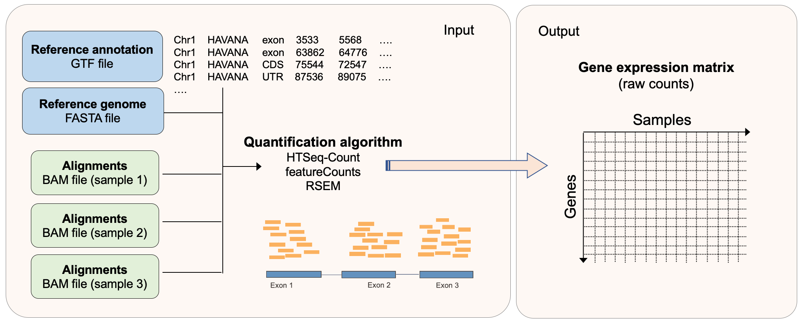
A number of methods quantify expression levels by counting reads exist. These methods require a alignments (.bam file) and a genomic annotation (GTF/GFF file) that contains the coordinates of the features (genes) that we want to count over.
The most simplistic methods (e.g. htseq-count, featureCounts) use a specific set of rules to count the number of reads overlapping specific features. These are a good choice if you wish to quantify gene expression levels, and are not interested in transcript abundances.
Other, more complex methods, leverage probabilistic modeling in order to quantify the alignments (e.g. RSEM), which ascribes reads to features with a probability of this being the correct location for a given read. Generally, these methods are used if you wish to quantify transcript abundances, although can provide gene- and transcript-level estimates.
HTSeq-count
For our analysis, we will used htseq-count. The htseq-count algorithm follows a specific set of rules to count reads overlapping genomic features, in order to quantify expression over those features (genes). As input, htseq-count requires:
- Aligned sequencing reads (SAM/BAM file)
- List of genomic features (GTF file)
htseq-count has numerous options that can be specified to control its behaviour. One important feature that can be controlled is how htseq-count will count reads that overlap multiple features, for which it has three distinct modes: union (default), intersection_strict, and intersection_nonempty. You can change these using the mode option.
Counting modes (from the htseq-count documentation, found here)
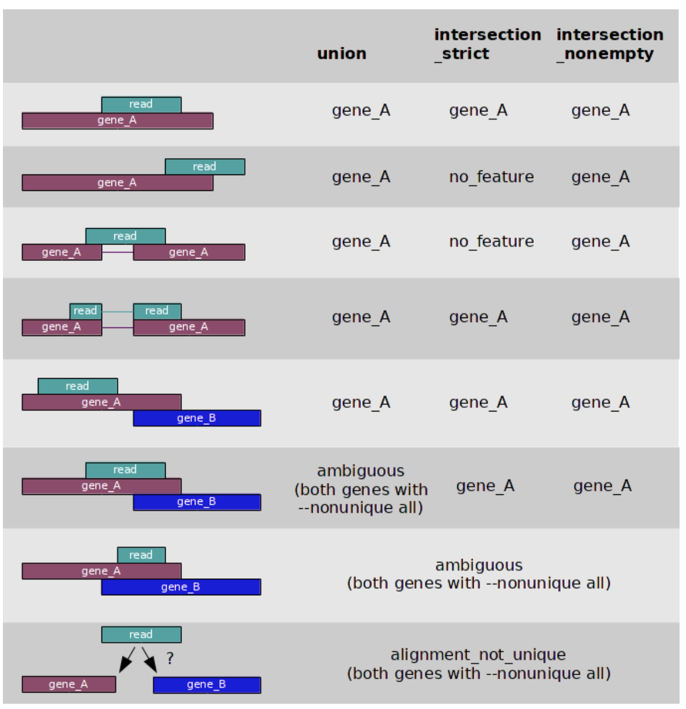
Strandedness:
One of the most important options in htseq-count is strandedness. It is critical to select the correct option for strandedness (-s) for your dataset, otherwise you may incorrectly use, or throw away, a lot of information.
The default setting in htseq-count for strandedness is yes, meaning reads will only be counted as overlapping a feature (exon of a gene) provided they map to the same strand as the feature.
If your data was generated using an unstranded library preparation protocol, as in this experiment, we must set this option to no. Failure to do so would mean you would throw away ~50% of all your reads, as they will be distributed equally across both strands for each feature in an unstranded library.
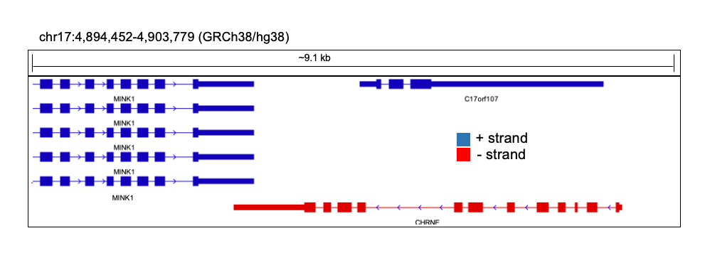
Feature type:
Another important option in htseq-count is t or type which specifies which feature type (3rd column of a GTF file) you want to count features over. The default is exon which works for GTF files from Ensembl, such as the file we will be using. However, this can be changed to any feature in your GTF file, so theoretically can be used to count any feature you have annotated.
Specifying BAM sorting:
When counting paired-end data (such as in this experiment) your .bam files should be sorted before running htseq-count, and you can specify how your .bam is sorted using the -r option. name indicates they are sorted by read name, pos indicates they are sorted by genomic position.
Run htseq-count on your .bam file
htseq-count \
-f bam \
-s no \
-r pos \
--additional-attr "gene_name" \
../alignment/SRR1039508.Aligned.sortedByCoord.out.chr20.bam \
/dartfs-hpc/scratch/rnaseq1/refs/Homo_sapiens.GRCh38.97.gtf > SRR1039508.htseq-counts
# same command as above but without the newlines to separate the flags - only run one of these
htseq-count -f bam -s no -r pos --additional-attr "gene_name" ../alignment/SRR1039508.Aligned.sortedByCoord.out.chr20.bam /dartfs-hpc/scratch/rnaseq1/refs/Homo_sapiens.GRCh38.97.gtf > SRR1039508.htseq-counts
There are numerous settings that can be tweaked and turned on/off in htseq-count. I strongly recommend you read the manual before running htseq-count so that you understand all the default options and available settings.
.... Let it run...
Lets have a look at the resulting file.
# how many lines
wc -l SRR1039508.htseq-counts
# first few rows
head SRR1039508.htseq-counts
# importantly, lets check the last few rows as these contain some important info
tail -n 12 SRR1039508.htseq-counts
Additional exercise:
- Can you visually confirm the read count returned in htseq-count by looking at the .bam file in IGV?
Run htseq-count on the rest of our samples
ls ../alignment/*.Aligned.sortedByCoord.out.bam | while read x; do
# save the file name
sample=`echo "$x"`
# get everything in file name before "/" (to remove '../alignment/')
sample=`echo "$sample" | cut -d"/" -f3`
# get everything in file name before "_"
sample=`echo "$sample" | cut -d"." -f1`
echo processing "$sample"
htseq-count \
-f bam \
-s no \
-r pos \
--additional-attr "gene_name" \
../alignment/${sample}.Aligned.sortedByCoord.out.bam \
/dartfs-hpc/scratch/rnaseq1/refs/Homo_sapiens.GRCh38.97.chr20.gtf > ${sample}.htseq-counts
done
Generate the gene expression matrix of raw read counts
The final step in the pre-processing of RNA-seq data for differential expression analysis is to concatenate your read counts into a gene expression matrix that contains the counts from all your samples. We will do this at the command line, however there are also ways to directly read the output of programs like htseq-count and RSEM directly into R without concatenating them into a matrix before hand.
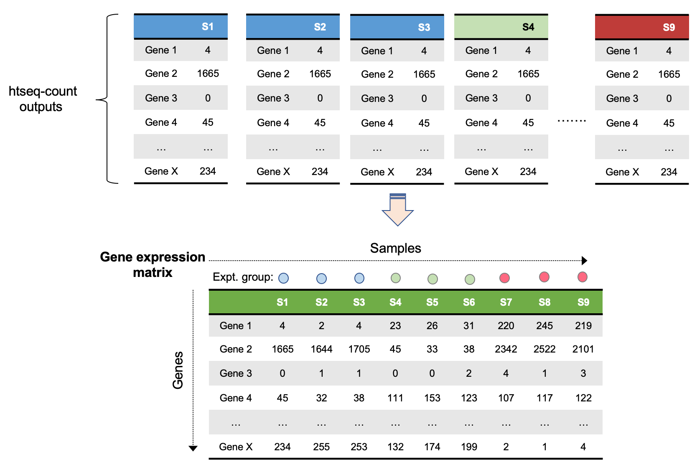
Loop over htseq-count output files and extract the read count column
# set up an array that we will fill with shorthand sample names
myarray=()
# loop over htseq.counts files and extract 2nd column (the raw read counts) using 'cut' command
while read x; do
# split up sample names to remove everything after "-"
sname=`echo "$x"`
sname=`echo "$sname" | cut -d"-" -f1`
# extract second column of file to get read counts only
echo counts for "$sname" being extracted
cut -f3 $x > "$sname".tmp.counts
# save shorthand sample names into an array
sname2="$sname"
myarray+=($sname2)
done < <(ls -1 *.htseq-counts | sort)
Paste all gene IDs into a file with each to make the gene expression matrix
# extract ENSG gene IDs and gene names from one of the files
cut -f1-2 SRR1039508.htseq-counts > genes.txt
# use the paste command to put geneIDs and raw counts for all files in 1 file
paste genes.txt *.tmp.counts > tmp_all_counts.txt
# check it looks good
head tmp_all_counts.txt
Save sample names in the array into text file
# look at the contents of the array we made with shorthand sample names
echo ${myarray[@]}
# print contents of array into text file with each element on a new line
printf "%s\n" "${myarray[@]}" > col_names.txt
cat col_names.txt
# add 'gene_name' to colnames
cat <(echo "ENSEMBL_ID") <(echo "gene_name") col_names.txt > col_names_full.txt
cat col_names_full.txt
Put sample names in the file with counts to form row headers and complete the gene expression matrix
# make a file to fill
touch all_counts.txt
# use the 'cat' command (concatenate) to put all tmp.counts.txt files into all_counts.txt
cat <(cat col_names_full.txt | sort | paste -s) tmp_all_counts.txt > all_counts.txt
# view head of file
head all_counts.txt
tail all_counts.txt
# how many lines
wc -l all_counts.txt
# remove last five lines containing the extra quant info
head -n-5 all_counts.txt > all_counts_f.txt
wc -l all_counts_f.txt
Remove all the tmp files
rm -f *tmp*
In practice, you would have generated the .htseq.counts files using all genes across the entire genome, and using all of the samples in the dataset, instead of the four samples we used in these examples. So that we have the complete set of counts available for day 2, we have made a complete raw counts matrix for you to use. You can find this in /dartfs-hpc/scratch/rnaseq1/data/htseq-counts/. It is also in the GitHub repository that you downloaded in the Day-2 folder, as we will be loading it into R tomorrow for the differential expression analysis.
Have a quick look at it:
head /dartfs-hpc/scratch/rnaseq1/data/htseq-count/all_counts.txt
# how many lines
cat /dartfs-hpc/scratch/rnaseq1/data/htseq-count/all_counts_full.txt | wc -l
# add it to our quant directory
cp /dartfs-hpc/scratch/rnaseq1/data/htseq-count/all_counts_full.txt all_counts_full.txt
# also copy the below file as we will need it in the next lesson
cp /dartfs-hpc/scratch/rnaseq1/data/htseq-count/gene-lengths-grch38.tsv gene-lengths-grch38.tsv
Quantification of transcript abundance
Above we discussed calculating abundances at the gene-level, however depending on your experiment, you may also be interested in determining individual transcript abundances. Calculating transcript abundances is more complex than gene-level counting, as not all reads span splice-junctions, therefore we cannot be sure which transcript they originated from.
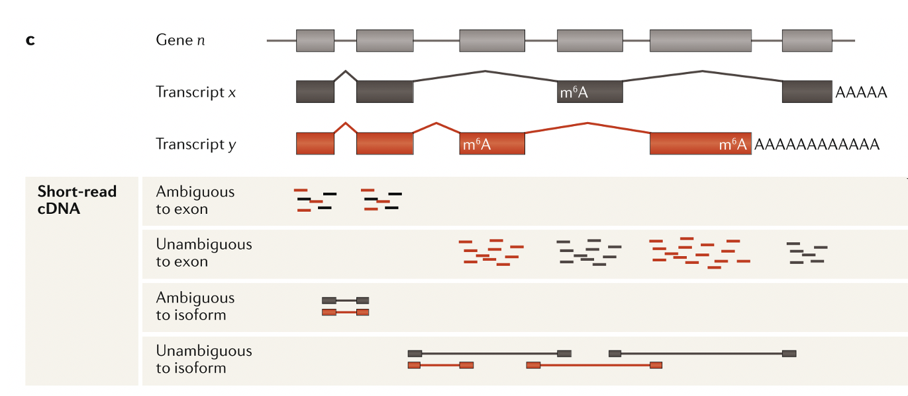
Figure from Stark et al, 2019, Nature Rev. Gen.
Methods that generate transcript abundances use an estimation step in order to probabilistically estimate expression levels. RSEM is a commonly used method for isoform abundance estimation, and uses an iterative process (expectation-maximization) to fractionally assign reads to individual isoforms.
Consider the example below from Haas et al, 2013, Nature Protocols.. Two isoforms for the same gene are shown, along with mapped reads (short bars). Reads unambiguously mapped to each isoform are in red & yellow, while blue reads are mapped to regions shared by both isoforms. The expectation-maximization algorithm uses the red and yellow reads to fractionally assign reads to each isoform (hollow vs filled-in reads on right).
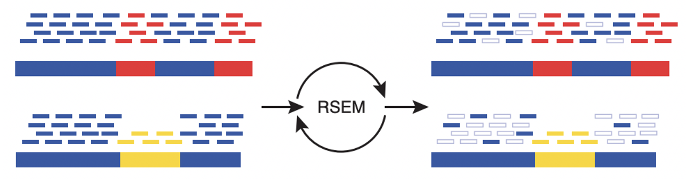
Figure from Haas et al, 2013, Nature Protocols.
In order to generate transcript abundances, tools like RSEM require transcriptome alignments, which contains read alignments based on transcript coordinates (compared to genome coordinates).
Previously we used STAR to generate a genome mapping, therefore to use RSEM to quantify transcript abundance, we would need to re-map our reads using additional setting in STAR. Transcriptome alignments can be output from STAR using the quantmode argument.
Although transcript abundance estimation is generally more time consuming than gene-level counting, methods such as RSEM can collapse transcript estimates into gene-level abundances, which has been shown to improve gene-level inferences.
Additional exercise
Complete and run the code below to generate transcript quantification estimates using RSEM on one sample from our dataset. The majority of the code has been provided for you, however you should look at the documentation from STAR and RSEM to better understand the options used.
In addition, RSEM has not been included in your original conda environment (intentionally), so you must install it before completing the example below. Go to the conda page for RSEM to obtain the code needed to add RSEM to your conda environment. Note that this command may take a few minutes to run.
# set your current working directory to your own results/alignment directory
ADD CODE HERE
# run STAR again on the sample 'SRR1039508'
### NOTE the new option: '--quantMode'
STAR --genomeDir /dartfs-hpc/scratch/rnaseq1/refs/hg38_chr20_index \
--readFilesIn ../trim/SRR1039508_1.trim.chr20.fastq.gz ../trim/SRR1039508_2.trim.chr20.fastq.gz \
--readFilesCommand zcat \
--sjdbGTFfile /dartfs-hpc/scratch/rnaseq1/refs/Homo_sapiens.GRCh38.97.chr20.gtf \
--runThreadN 1 \
--outSAMtype SAM \
--outFilterType BySJout \
--quantMode TranscriptomeSAM \
--outFileNamePrefix SRR1039508.
You should now have a file called SRR1039508.Aligned.toTranscriptome.out.bam in your alignments directory. This file contains the transcriptome alignments of our reads to GRCh38.
Similarly to STAR, RSEM requires a specifically formatted version of the reference genome. The RSEM reference can be generated using the RSEM command rsem-prepare-reference. Do not run this command during the workshop as it is time consuming. An RSEM formatted reference has been provided for you in /dartfs-hpc/scratch/rnaseq1/refs/hg38_chr20_index_RSEM/. Below is an example of the command used to generate this reference.
#### DO NOT RUN DURING WORKSHOP ####
rsem-prepare-reference --gtf /dartfs-hpc/scratch/rnaseq1/refs/Homo_sapiens.GRCh38.97.gtf \
-p 1 \
/dartfs-hpc/scratch/rnaseq1/refs/Homo_sapiens.GRCh38.dna.primary_assembly.chr20.fa \
hg38_chr20_index_RSEM/ref
Now navigate to your quantification directory (quant) and run RSEM on your transcriptome alignments, using the RSEM reference provided for you. rsem-calculate-expression is the command used by RSEM to quantify transcript expression.
# naigate to your quant directory
ADD CODE HERE
# run RSEM
rsem-calculate-expression --paired-end \
--alignments \
--strandedness none \
-p 1 \
SRR1039508.Aligned.toTranscriptome.out.bam \
/dartfs-hpc/scratch/rnaseq1/refs/hg38_chr20_index_RSEM/ref \
SRR1039508
Now have a look at the results:
# list files
ls
# print isoform quantification estimates
head SRR1039508.isoforms.results
# print gene quantification estimates
head SRR1039508.genes.results
RSEM provides both gene-level, and transcript/isoform-level quantification estimates. Use the RSEM documentation to understand the fields in output files.
Normalization
Part 4 - Data normalization in RNA-seq
Learning objectives:
- Understand why read counts must be normalized in RNA-seq data
- Learn the principles behind the major normalization strategies in RNA-seq and when to apply them
- Learn how to perform these normalization strategies
For this lesson we will work in the quant/ directory we made previously:
# go to our home workshop dir
rnaw
# move into folder for quantification analysis
cd results/quant
If you get lost and need to catch up quickly you can copy the files needed for the next step with this command:
cp /dartfs-hpc/scratch/rnaseq1/data/htseq-count/* results/quant
Count normalization in RNA-seq
In order to compare expression levels between genes within a sample, or genes across multiple samples, it is critical the data is normalized to allow appropriate interpretation of the results. Which normalization strategy used depends on several factors such as library type, and type of comparison you wish to make (e.g. within- vs between-sample).
Below we will discuss the major sources of variation that need to be accounted for during normalization in order to reach appropriate conclusions about your results. Subsequently, we will discuss the normalization approaches that account for these sources of variation and when to use them.
Sources of variation in RNA-seq data requiring normalization
Gene length
Gene length varies a great deal across transcriptomes.
In the example below, we see two genes, X and Y. If we were to simply compare the number of reads successfully mapped to gene X and gene Y, we would conclude gene X is expressed ~2x that of gene Y.
However, since gene X is ~2x longer than gene Y, gene X contributed ~2x as many RNA fragments to the original sequencing library. Gene X therefore only has more reads mapped to it because it is longer, NOT because it is truly expressed at greater level than gene Y.
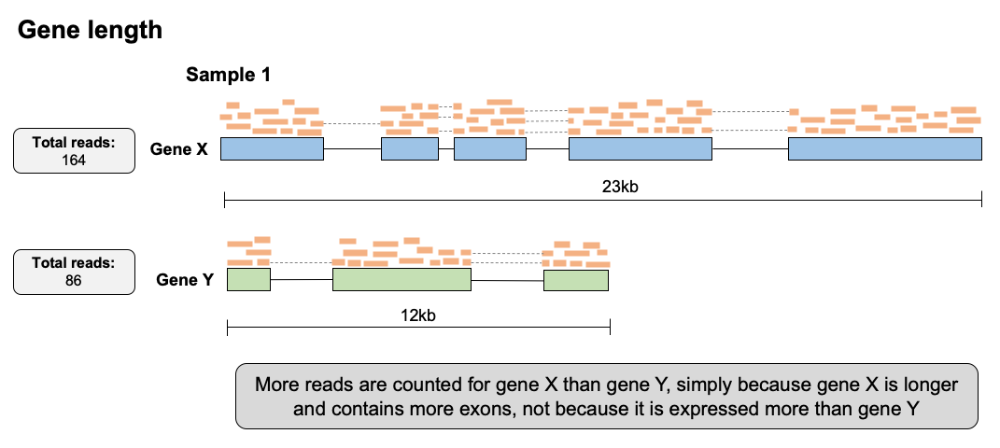
To address gene length bias, we must normalize raw read counts in a way that accounts for the size of each gene. Once we do this for gene X & gene Y, we would conclude their gene expression levels are similar.
Normalization for gene length is critical when comparing between genes within the same sample, however when comparing expression of the same gene across different samples, correction for gene length is not as important since we assume the gene is of the same length in all samples.
NOTE: An exception to this rule is when comparing expression levels of different transcripts between samples, which may change in length.
Library size/sequencing depth
Although samples are pooled together at similar concentrations for sequencing, some samples end up being sequenced more than others, leading to slight differences in how many reads are produced for that sample, and therefore sequencing depth and size. Furthermore, if samples are sequenced on separate runs, their sequencing depths may be very different.
If we don't account for variation in sequencing depth, we might conclude some genes are expressed at greater levels in a sample that has simply been sequenced to a greater depth.

In the above example, sample 1 (left) is sequenced to twice the depth of sample 2 (right), with 30 million reads vs 15 million reads. None of the genes are truly differentially expressed between the samples, and all 3 genes have approximately twice as many reads as those in sample 1 simply due to the excess sequencing depth.
Library composition
The presence of truly differentially expressed genes between samples causes the number of reads for other genes in those samples to be skewed. In the below example, gene Y is differentially expressed between the two samples, with much higher expression in sample 1. This means that fewer sequencing reagents are available in sample 1 for sequencing the other genes (X and Y) and they will achieve fewer reads than the same genes in sample 2, even if the samples are sequenced to the same depth.

Such library composition effects must also be accounted for during normalization to avoid falsely interpreting compositional effects as true differential expression findings. If samples you wish to compare are very distinct in their gene expression profiles, such as comparing drug-treated samples vs untreated samples, compositional effects may be large, therefore effectively correcting for these effects becomes critical for appropriate interpretation.
Normalization methods
Several normalization methods exist for RNA-seq data. Which method you use depends on the comparison you are trying to make (e.g. between or within samples), therefore it is important to understand how each is calculated and when to use it.
Counts per million (CPM)
CPM is a simple normalization method that involves scaling the number of reads mapped to a feature by the total number of reads in a sample. This fraction is multiplied by 1 million in order to provide the number of reads per million mapped in the sample.
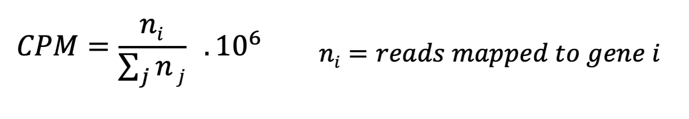
We will briefly use R to calculate CPM values for our dataset. If you are not familiar with R don't worry, this is not complex R code and many software packages will calculate normalized counts for you.
# load R into your modules
module load R
# to begin an R session on discovery use the following command
R
# read in raw counts matrix
all_counts <- read.table("all_counts_full.txt", sep="\t", stringsAsFactors=F, header=T)
# look at the counts object
head(all_counts)
# write a function that will calculate TPM
cpm <- function(counts) {
cpm <- c()
for(i in 1:length(counts)){
cpm[i] <- counts[i] / sum(counts) * 1e6
}
cpm
}
# apply function to the columns of raw counts data
# we start at the third column because the first two columns have the ensemble IDs and gene names
all_counts_cpm <- apply(all_counts[3:5], 2, cpm)
## NOTE: we are calculating cpm for first 3 samples only to save time..
# add gene info columns back in
all_counts_cpm <- cbind(all_counts[, c(1,2)], all_counts_cpm)
# write to file
write.csv(all_counts_cpm, file="all_counts_CPM.csv")
NOTE: CPM does NOT normalize for gene length, therefore cannot be used to compare expression between different genes in the same sample. An exception to this rule would be in the case of 3'-end RNA-seq datasets, which have no gene length bias, therefore CPM would be appropriate for comparing expression between genes in the same sample in such data.
Transcripts per million (TPM)
TPM has become a common normalization approach for RNA-seq data. Reads mapped to a feature (gene) are first normalized by the length of the feature (in kilobases), then divided by the total number of length normalized reads in the sample. Like CPM, reads are scaled per million.
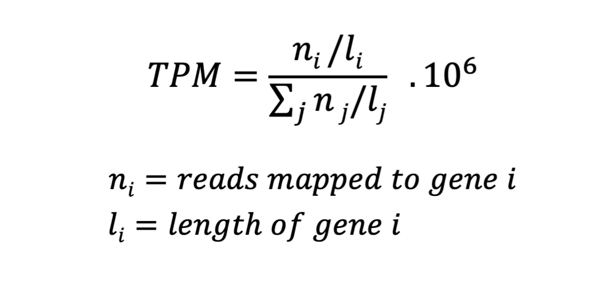
Since TPM normalizes for both gene length and sequencing depth, TPM values can be used to compare expression levels of genes within a sample, as well as between samples. TPM is recommended instead of RPKM/FPKM, for reasons we will discuss below.
Calculate TPM from our raw read counts:
# read in gene lengths matrix (pre made for you)
gene_lengths <- read.table("gene-lengths-grch38.tsv", sep="\t", stringsAsFactors=FALSE, header=TRUE)
# look at the lengths object
head(gene_lengths)
# write a function that will calculate TPM
tpm <- function(counts, lengths) {
rate <- counts / lengths
tpm <- c()
for(i in 1:length(counts)){
tpm[i] <- rate[i] / sum(rate) * 1e6
}
tpm
}
# apply function to the columns of raw counts data
all_counts_tpm <- apply(all_counts[1:(nrow(all_counts)-5), 3:5], 2, tpm, gene_lengths$length)
## NOTE: we are calculating tpm for first 3 samples only to save time..
# add gene info columns back in
all_counts_tpm <- cbind(all_counts[1:(nrow(all_counts)-5), c(1,2)], all_counts_tpm)
# write to file
write.csv(all_counts_tpm, file="all_counts_TPM.csv")
Now you have a separate expression file containing all the normalized count values, and can be used to compare gene expression between samples, as well as between genes within a sample.
You could use this matrix to plot TPM values for some genes of interest. For example, the manuscript associated with these data (Himes et al, 2014, PloS One) identifies DUSP1 as a differentially expressed gene in their study. Lets plot DUSP1 TPM values to see if we can confirm this observation.
NOTE: Since we only calculated TPM for a subset of samples above (to save time) the example below will first load the complete TPM normalized dataset.
Visualize DUSP1 TPM expression levels:
# read in file containing all TPM counts (pre-made for you)
all_counts_tpm_full <- read.csv("/dartfs-hpc/scratch/rnaseq1/data/htseq-count/all_counts_TPM-full.csv")
# get expression values for DUSP1 row
DUSP1_tpm <- all_counts_tpm_full[all_counts_tpm_full$gene_name=="DUSP1",]
# remove gene info columns
DUSP1_tpm <- DUSP1_tpm[ ,c(4:ncol(DUSP1_tpm))]
# convert to a numeric vector
DUSP1 <- as.numeric(DUSP1_tpm[1,])
# generate barplot of gene expression across samples
ppi=300
png("DUSP1_tpm.png")
barplot(DUSP1,
col="lightblue", ylab="TPM", xlab="sample",
main = "DUSP1 expression", las = 1)
dev.off()
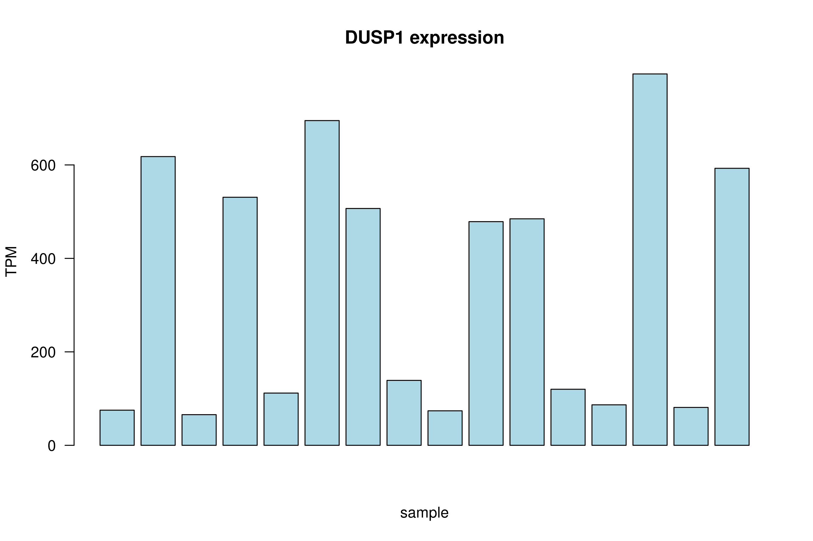
DUSP1 expression is clearly variable across the samples, suggesting differential expression across sample groups may exist (treated vs untreated). This can be tested statistically in a formal differential expression analysis (next workshop!).
Reads/fragments per kilobase of exon per million mapped reads (RPKM/FPKM)
RPKM and FPKM have been used for many years as normalization strategies in RNA-seq experiments. RPKM/FPKM are calculated in a very similar way to TPM, however the order of operations is essentially reversed. For RPKM and FPKM, reads are first normalized for sequencing depth, then gene length.
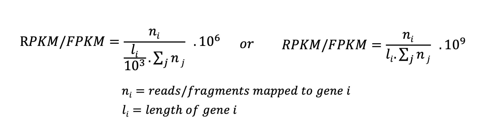
The difference between RPKM and FPKM is very simple: RPKM is used for single-end experiments, whereas FPKM is used in paired-end experiments. This is because in single-end experiments we only measure one end of the DNA fragments in our library, however in paired-end experiments we measure the same DNA molecule 2x (once from each end), therefore we only need to count that fragment once during normalization, despite having 2 reads for it.
Since our dataset is paired-end and we counted the number of fragments in the quantification step, we are calculating FPKM. Calculate FPKM from our raw read counts:
# write a function that will calculate TPM
fpkm <- function(counts, lengths) {
rate <- counts / lengths
fpkm <- c()
for(i in 1:length(counts)){
fpkm[i] <- rate[i] / sum(counts) * 1e9
}
fpkm
}
# apply function to the columns of raw counts data
all_counts_fpkm <- apply(all_counts[1:(nrow(all_counts)-5), 3:5], 2, fpkm, gene_lengths$length)
## NOTE: we are calculating fpkm for first 3 samples only to save time..
# add gene info columns back in
all_counts_fpkm <- cbind(all_counts[1:(nrow(all_counts)-5), c(1,2)], all_counts_fpkm)
# write to file
write.csv(all_counts_fpkm, file="all_counts_FPKM.csv")
Although the measures are calculated in a very similar way, the reversed order of the calculations has a profound effect on how the values calculated by each method can be interpreted. Consider the example below:
Raw counts:
| Gene | Sample 1 | Sample 2 |
|---|---|---|
| X (4kb) | 65 | 73 |
| Y (3kb) | 20 | 25 |
| Z (1kb) | 15 | 12 |
| Total | 100 | 110 |
Raw counts for 2 samples with slightly different read depths (100 vs 110) therefore normalization is required to compare gene expression levels.
RPKM:
| Gene | Sample 1 | Sample 2 |
|---|---|---|
| X (4kb) | 1.625 | 1.659 |
| Y (3kb) | 0.667 | 0.758 |
| Z (1kb) | 1.500 | 1.091 |
| Total | 3.792 | 3.508 |
Note how the proportion of total RPKM values for any one given gene is different depending on the dataset, as the total RPKM values are not equal across all samples. Therefore, it is not straightforward to compare RPKM values for a single gene across samples.
TPM:
| Gene | Sample 1 | Sample 2 |
|---|---|---|
| X (4kb) | 4.286 | 4.730 |
| Y (3kb) | 1.758 | 2.160 |
| Z (1kb) | 3.956 | 3.110 |
| Total | 10 | 10 |
Total TPM values across samples are equal, therefore the TPM values for each gene can be interpreted on the same scale between samples, making TPM values less susceptible to bias. TPM has now been suggested as a general replacement to RPKM and FPKM.
Despite the benefits of interpretability achieved by TPM, limitations still exist, and TPM values (like RPKM/FPKM) are susceptible to misuse in some contexts, discussed further in Zhao et al, 2020.. In particular, while TPM does normalize for library composition effects between samples, when composition effects become very large (such as when comparing between experimental groups in a differential expression experiment) TPM can suffer some biases.
To address these issues, more complex normalization algorithms have been developed that more completely address library composition issues when very large differences in gene expression exist between samples. These methods are generally used to normalized RNA-seq data in the context of a differential expression analysis. For example:
- DESeq2's median-of-ratios
- EdgeR's TMM method (Trimmed Mean of M-values)
Although we don't discuss these normalization approaches in this workshop, they will be discussed in the next RNA-seq workshop in this series (Differential Expression Analysis).
Summary: Normalization method comparison
The below table summarizes the 3 normalization methods described above. It is important to learn when it is appropriate to apply each one to your dataset based on the comparisons you are trying to make.
| Method | Name | Accounts for | Appropriate comparisons |
|---|---|---|---|
| CPM | Counts per million | Depth | - Between-sample - Within experimental group |
| TPM | Transcripts per million | Depth & feature length | - Between- and within-sample - Within experimental group |
| RPKM/FPKM | Reads/fragments per kilobase of exon per million |
Depth & feature length | - Within-sample |
Joining the Workflow
Joining the workflow together
Just like experiments in the lab, it is important that you keep careful track of how your work was performed. To do this for computational analysis, we need to keep track of the commands used to perform an analysis.
One way to do this is by storing all your commands for a particular analysis in one file, and writing the commands in such a way that they are completed in succession, with each command using the output from the previous command.
One of the benefits of writing your code this way is the same code can be used over and over by simply providing the code with a different set of sample names. Code written this way is generally written, edited, and revised using a text editor (e.g. Sublime text or BBedit).
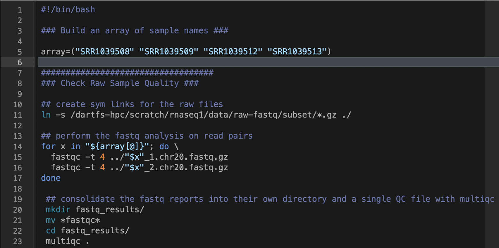
If/Else statements
A useful way to control operations in a script is with if/else statements. These allow commands to be run only if certain conditions are true.
if statement example:
#Just an if statement, without an else statement
a=5
if [ $a == 5 ]
then
echo "a is equal to 5"
fi
#Try setting a to 6, and observe there is no output.
if/else statement example:
a=5
if [ $a == 5 ]
then
echo "a is equal to 5"
else
echo "a is not equal to 5"
fi
There are many possible conditions to check for variables and files in Bash. Here is a link to a reference containing the syntax for some available conditional tests.
Exercise: complete the workflow
After you have completed the previous lessons & exercises (or as 'homework' after the workshop), we have provided the foundations of a simple script that links together commands from each part of the RNA-seq analysis we performed. Try filling in the rest of the commands to complete the workflow, and run it on the full dataset.
If you run into trouble leave a slack comment explaining your error(s) and we will do our best to get back to you!
To start out we are going to create an array with our sample names so that we can use the sample names to control the input and output of each of the commands.
Then we will use the array to write several for loops that iterate over the elements of the array to do something with them.
#!/bin/bash
echo -n "RNA-Seq Pipeline beginning at: "; date
###################################
### Input Data Gathering ###
echo "Symlinking Raw Data"
mkdir data
cd data
ln -s /dartfs-hpc/scratch/rnaseq1/data/raw-fastq/subset/*.gz ./
echo -n "Symlinks created in: "; pwd
cd ..
sample_list="SRR1039508 SRR1039509 SRR1039512 SRR1039513"
echo "The pipeline will be run for the following samples:"
for i in $sample_list; do echo $i; done
###################################
### Input Data Checking ###
echo "Checking file existence..."
for i in $sample_list
do
if [ -f data/${i}_1.chr20.fastq.gz ]
then
echo $i "exists."
else
echo $i "does not exist!!!"
echo "Exiting pipeline."
exit
fi
done
echo "Input file checking complete."
###################################
### Reference Data Checking ###
STAR_INDEX=/dartfs-hpc/scratch/rnaseq1/refs/hg38_chr20_index
if [ -d $STAR_INDEX ]
then
echo $STAR_INDEX " index exists"
else
echo $STAR_INDEX " does not exist"
echo "exiting pipeline..."
fi
echo "Reference file checking complete."
###################################
### FastQC ###
echo "Running FastQC..."
for i in $sample_list; do fastqc data/${i}_1.chr20.fastq.gz; fastqc data/${i}_2.chr20.fastq.gz;done
echo "FastQC complete."
echo "Moving FastQC reports..."
mkdir fastqc_reports
mv data/*fastqc.html fastqc_reports/
mv data/*fastqc.zip fastqc_reports/
echo "Moving reports complete."
###################################
### Cutadapt ###
echo "Running Cutadapt..."
mkdir trim
cd trim
for i in $sample_list; do cutadapt -o ${i}_1.trim.chr20.fastq.gz -p ${i}_2.trim.chr20.fastq.gz ../data/${i}_1.chr20.fastq.gz ../data/${i}_2.chr20.fastq.gz -m1 -q 20 -j4 > ${i}_cutadapt.report; done
echo "Cutadapt complete."
cd ..
###################################
### STAR Alignment ###
mkdir alignment
cd alignment
echo "Running STAR alignment..."
for i in $sample_list; do STAR --genomeDir $STAR_INDEX --readFilesIn ../trim/${i}_1.trim.chr20.fastq.gz ../trim/${i}_2.trim.chr20.fastq.gz --readFilesCommand zcat --runThreadN 4 --outSAMtype BAM SortedByCoordinate --outFilterType BySJout --outFileNamePrefix ${i}_; done
echo "STAR complete."
cd ..
###################################
### Run MarkDuplicates ###
###################################
### Run CollectRNASeqMetrics ###
###################################
### Move alignment and metrics into a single directory and run multiqc ###
###################################
### Run htseq-count ###
echo -n "RNA-Seq Pipeline finished at: "; date
Workflow management software
Writing a shell script-based pipeline like the one above is useful for custom projects, and as a learning tool. However, robust workflow management tools exist, which contain features such as parallelization, checking of expected inputs and outputs, cluster submission, conditional job execution, and restarting from checkpoints. Writing all of these into one's own shell script would be time consuming. Two widely-used workflow management tools for bioinformatics are Snakemake and Nextflow. The DAC maintains a Snakemake pipeline with steps very similar to those used in this workshop.
Snakemake job graph example for these samples:
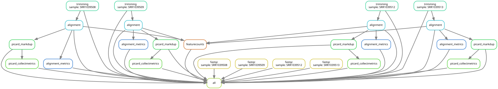
Closing Remarks
Closing remarks
Workshop goals:
- Develop a working understanding of the analytical workflow for a modern RNA-seq experiments
- Build a working knowledge of sample preparation considerations for RNA-seq experiments
- Learn how to process raw NGS data in FASTQ format to generate a gene expression matrix
- Learn how to perform a detailed quality control analysis
Workshop overview
Some final take-aways from the workshop:
- Spend the time to plan, consult, practice, (and money) to generate high quality data sets
- If you are going to do a lot of Bioinformatics, you should get really good at the command-line (Bash), otherwise, pre-processing will be slow & painful
- Identify, understand, and check key QC metrics to ensure the quality of your results
- Understand when and how to apply different normalization approaches.
How to consolidate your learning:
- Re-run the code a week or two after the workshop, as this is a great way to consolidate what you have learned at the command-line
- Edit the code, run sub-sections, read the
manpages for commands, etc. to build a solid understanding of how everything works - Practice with the complete dataset (all chromosomes), that is available to you for approx. 1 month on discovery in
/scratch/rnaseq1/data/. This will give you experience running data from the entire genome, and an appreciation for the computational resources and required time to complete these tasks. - Read the methods sections of published papers that perform RNA-seq, to gain an appreciation for the range of approaches used in practice and how they are implemented
- Ask us questions! (Bioinformatics office hours: https://dartmouth.zoom.us/s/96998379866, every other Friday at 1-2 pm, password: bioinfo, check calender here.
Suggested reading:
Reading manuscripts that use RNA-seq, or reviews specifically focused on RNA-seq are excellent ways to further consolidate your learning.
In addition, reading the original manuscripts behind common tools will improve your understanding of how that tool works, and allow you to leverage more complicated options and implementations of that tool when required.
Below we provide some suggested reading to help get you on your way:
Review articles
- Stark et al, 2019, Nat. Rev. Genetics.
RNA Sequencing: The Teenage Years - Conesa et al, 2016, Genome Biology.
A survey of best practices for RNA-seq data analysis - Wang, et al, 2009, Nat. Rev. Genetics.
RNA-Seq: a revolutionary tool for transcriptomics - Cresko Lab, Univeristy of Oregon.
RNA-seqlopedia : provides an overview of RNA-seq and of the choices necessary to carry out a successful RNA-seq experiment.
Original manuscripts: Popular RNA-seq tools
- Cutadapt:
Cutadapt Removes Adapter Sequences From High-Throughput Sequencing Reads. - STAR:
STAR: ultrafast universal RNA-seq aligner - HISAT2:
Graph-based genome alignment and genotyping with HISAT2 and HISAT-genotype - Bowtie2:
Fast gapped-read alignment with Bowtie 2 - HTSeq-count:
HTSeq—a Python framework to work with high-throughput sequencing data
What next?
While multiple downstream applications of RNA-seq exist, differential expression analysis is the most common. As discussed in the last lesson, standard normalization does not provide a statistical assessment of the data which is needed to make inferences (e.g. gene X is differentially expressed between treatment groups).
If you are interested in learning how to perform a DE analysis, sign up for Part 2 in our series of RNA-seq data analysis workshops. You should all have received an email containing the sign up link.
Differential expression analysis workshop - July 2022
Workshop goals:
- Develop a working understanding of fundamental bioinformatics and statistical concepts for a typical bulk RNA-seq DE analysis
- Learn how to leverage the R/Bioconductor framework to perform DE analysis
- Learn how to use unsupervised data analysis methods (e.g. principal components analysis) to explore RNA-seq datasets
- Perform a complete DE analysis on a real RNA-seq dataset
Registration Limit: 40
High performance computing (HPC)
During the workshop, we all logged onto Discovery and ran our workflow interactively. Generally, this type of 'interactive' work is not encouraged on Discovery, and is better performed using other servers such as Andes & polaris (see article here on this topic from research computing).
However, working interactively with genomics data can be quite slow since many operations will need to be run in sequence across multiple samples. As an alternative, you can use the scheduler system on discovery, that controls how jobs are submitted and managed on the Discovery cluster.
Using the scheduler will allow you to make use of specific resources (such as high memory nodes etc.) and streamline your workflows more efficiently. Dartmouth just transitioned to using Slurm.
We encourage you to get comfortable using the scheduler and submitting jobs using an HPC system. Research Computing has a lot of great material regarding using Discovery on their website.
Feedback:
We ask that you all complete the survey that will be sent out over email so that we can gauge what worked well and what we need to improve for our next workshop. If you have additional thoughts that were not addressed in the survey, please feel free to contact any one of us, or reach out to the DAC email directly (DataAnalyticsCore@groups.dartmouth.edu).
We plan to offer this workshop again, as well as workshops covering other types of genomic data analysis and bioinformatics. If you have suggestions for workshops you would like to see, please let us know!
Please feel free to reach out to us with questions about concepts discussed in the workshop, or for a analysis consultations. Our bioinformatics office hours on Fridays 1-2pm are a great place to do this! (currently on zoom: https://dartmouth.zoom.us/s/96998379866, pword: bioinfo, check calender here.